663 Grafik-/Fontdateien. Größen und Formate sind technische Ausgaben derselben Motive. Alle Ressourcen liegen innerhalb dieses Ordners.
663 Assetdateien
book-stack-mini-128 assets/dark-v1.1/decorations/mini/book-stack-mini-128.png existing v1.1 runtime resource; optional, no new individual approvalDateibook-stack-mini-128 assets/dark-v1.1/decorations/mini/book-stack-mini-128.webp existing v1.1 runtime resource; optional, no new individual approvalDateibook-stack-mini-32 assets/dark-v1.1/decorations/mini/book-stack-mini-32.png existing v1.1 runtime resource; optional, no new individual approvalDateibook-stack-mini-32 assets/dark-v1.1/decorations/mini/book-stack-mini-32.webp existing v1.1 runtime resource; optional, no new individual approvalDateibook-stack-mini-64 assets/dark-v1.1/decorations/mini/book-stack-mini-64.png existing v1.1 runtime resource; optional, no new individual approvalDateibook-stack-mini-64 assets/dark-v1.1/decorations/mini/book-stack-mini-64.webp existing v1.1 runtime resource; optional, no new individual approvalDateicandles-mini-128 assets/dark-v1.1/decorations/mini/candles-mini-128.png existing v1.1 runtime resource; optional, no new individual approvalDateicandles-mini-128 assets/dark-v1.1/decorations/mini/candles-mini-128.webp existing v1.1 runtime resource; optional, no new individual approvalDateicandles-mini-32 assets/dark-v1.1/decorations/mini/candles-mini-32.png existing v1.1 runtime resource; optional, no new individual approvalDateicandles-mini-32 assets/dark-v1.1/decorations/mini/candles-mini-32.webp existing v1.1 runtime resource; optional, no new individual approvalDateicandles-mini-64 assets/dark-v1.1/decorations/mini/candles-mini-64.png existing v1.1 runtime resource; optional, no new individual approvalDateicandles-mini-64 assets/dark-v1.1/decorations/mini/candles-mini-64.webp existing v1.1 runtime resource; optional, no new individual approvalDateicode-fragments-mini-128 assets/dark-v1.1/decorations/mini/code-fragments-mini-128.png existing v1.1 runtime resource; optional, no new individual approvalDateicode-fragments-mini-128 assets/dark-v1.1/decorations/mini/code-fragments-mini-128.webp existing v1.1 runtime resource; optional, no new individual approvalDateicode-fragments-mini-32 assets/dark-v1.1/decorations/mini/code-fragments-mini-32.png existing v1.1 runtime resource; optional, no new individual approvalDateicode-fragments-mini-32 assets/dark-v1.1/decorations/mini/code-fragments-mini-32.webp existing v1.1 runtime resource; optional, no new individual approvalDateicode-fragments-mini-64 assets/dark-v1.1/decorations/mini/code-fragments-mini-64.png existing v1.1 runtime resource; optional, no new individual approvalDateicode-fragments-mini-64 assets/dark-v1.1/decorations/mini/code-fragments-mini-64.webp existing v1.1 runtime resource; optional, no new individual approvalDateicrystals-mini-128 assets/dark-v1.1/decorations/mini/crystals-mini-128.png existing v1.1 runtime resource; optional, no new individual approvalDateicrystals-mini-128 assets/dark-v1.1/decorations/mini/crystals-mini-128.webp existing v1.1 runtime resource; optional, no new individual approvalDateicrystals-mini-32 assets/dark-v1.1/decorations/mini/crystals-mini-32.png existing v1.1 runtime resource; optional, no new individual approvalDateicrystals-mini-32 assets/dark-v1.1/decorations/mini/crystals-mini-32.webp existing v1.1 runtime resource; optional, no new individual approvalDateicrystals-mini-64 assets/dark-v1.1/decorations/mini/crystals-mini-64.png existing v1.1 runtime resource; optional, no new individual approvalDateicrystals-mini-64 assets/dark-v1.1/decorations/mini/crystals-mini-64.webp existing v1.1 runtime resource; optional, no new individual approvalDateiivy-mini-128 assets/dark-v1.1/decorations/mini/ivy-mini-128.png existing v1.1 runtime resource; optional, no new individual approvalDateiivy-mini-128 assets/dark-v1.1/decorations/mini/ivy-mini-128.webp existing v1.1 runtime resource; optional, no new individual approvalDateiivy-mini-32 assets/dark-v1.1/decorations/mini/ivy-mini-32.png existing v1.1 runtime resource; optional, no new individual approvalDateiivy-mini-32 assets/dark-v1.1/decorations/mini/ivy-mini-32.webp existing v1.1 runtime resource; optional, no new individual approvalDateiivy-mini-64 assets/dark-v1.1/decorations/mini/ivy-mini-64.png existing v1.1 runtime resource; optional, no new individual approvalDateiivy-mini-64 assets/dark-v1.1/decorations/mini/ivy-mini-64.webp existing v1.1 runtime resource; optional, no new individual approvalDateilantern-mini-128 assets/dark-v1.1/decorations/mini/lantern-mini-128.png existing v1.1 runtime resource; optional, no new individual approvalDateilantern-mini-128 assets/dark-v1.1/decorations/mini/lantern-mini-128.webp existing v1.1 runtime resource; optional, no new individual approvalDatei
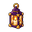
lantern-mini-32 assets/dark-v1.1/decorations/mini/lantern-mini-32.png existing v1.1 runtime resource; optional, no new individual approvalDateilantern-mini-32 assets/dark-v1.1/decorations/mini/lantern-mini-32.webp existing v1.1 runtime resource; optional, no new individual approvalDateilantern-mini-64 assets/dark-v1.1/decorations/mini/lantern-mini-64.png existing v1.1 runtime resource; optional, no new individual approvalDateilantern-mini-64 assets/dark-v1.1/decorations/mini/lantern-mini-64.webp existing v1.1 runtime resource; optional, no new individual approvalDateipotion-mini-128 assets/dark-v1.1/decorations/mini/potion-mini-128.png existing v1.1 runtime resource; optional, no new individual approvalDateipotion-mini-128 assets/dark-v1.1/decorations/mini/potion-mini-128.webp existing v1.1 runtime resource; optional, no new individual approvalDateipotion-mini-32 assets/dark-v1.1/decorations/mini/potion-mini-32.png existing v1.1 runtime resource; optional, no new individual approvalDateipotion-mini-32 assets/dark-v1.1/decorations/mini/potion-mini-32.webp existing v1.1 runtime resource; optional, no new individual approvalDateipotion-mini-64 assets/dark-v1.1/decorations/mini/potion-mini-64.png existing v1.1 runtime resource; optional, no new individual approvalDateipotion-mini-64 assets/dark-v1.1/decorations/mini/potion-mini-64.webp existing v1.1 runtime resource; optional, no new individual approvalDateiscroll-mini-128 assets/dark-v1.1/decorations/mini/scroll-mini-128.png existing v1.1 runtime resource; optional, no new individual approvalDateiscroll-mini-128 assets/dark-v1.1/decorations/mini/scroll-mini-128.webp existing v1.1 runtime resource; optional, no new individual approvalDateiscroll-mini-32 assets/dark-v1.1/decorations/mini/scroll-mini-32.png existing v1.1 runtime resource; optional, no new individual approvalDateiscroll-mini-32 assets/dark-v1.1/decorations/mini/scroll-mini-32.webp existing v1.1 runtime resource; optional, no new individual approvalDateiscroll-mini-64 assets/dark-v1.1/decorations/mini/scroll-mini-64.png existing v1.1 runtime resource; optional, no new individual approvalDateiscroll-mini-64 assets/dark-v1.1/decorations/mini/scroll-mini-64.webp existing v1.1 runtime resource; optional, no new individual approvalDateistardust-mini-128 assets/dark-v1.1/decorations/mini/stardust-mini-128.png existing v1.1 runtime resource; optional, no new individual approvalDateistardust-mini-128 assets/dark-v1.1/decorations/mini/stardust-mini-128.webp existing v1.1 runtime resource; optional, no new individual approvalDateistardust-mini-32 assets/dark-v1.1/decorations/mini/stardust-mini-32.png existing v1.1 runtime resource; optional, no new individual approvalDateistardust-mini-32 assets/dark-v1.1/decorations/mini/stardust-mini-32.webp existing v1.1 runtime resource; optional, no new individual approvalDateistardust-mini-64 assets/dark-v1.1/decorations/mini/stardust-mini-64.png existing v1.1 runtime resource; optional, no new individual approvalDateistardust-mini-64 assets/dark-v1.1/decorations/mini/stardust-mini-64.webp existing v1.1 runtime resource; optional, no new individual approvalDateiwand-mini-128 assets/dark-v1.1/decorations/mini/wand-mini-128.png existing v1.1 runtime resource; optional, no new individual approvalDateiwand-mini-128 assets/dark-v1.1/decorations/mini/wand-mini-128.webp existing v1.1 runtime resource; optional, no new individual approvalDateiwand-mini-32 assets/dark-v1.1/decorations/mini/wand-mini-32.png existing v1.1 runtime resource; optional, no new individual approvalDateiwand-mini-32 assets/dark-v1.1/decorations/mini/wand-mini-32.webp existing v1.1 runtime resource; optional, no new individual approvalDateiwand-mini-64 assets/dark-v1.1/decorations/mini/wand-mini-64.png existing v1.1 runtime resource; optional, no new individual approvalDateiwand-mini-64 assets/dark-v1.1/decorations/mini/wand-mini-64.webp existing v1.1 runtime resource; optional, no new individual approvalDateibook-stack-128 assets/dark-v1.1/decorations/objects/book-stack-128.webp existing v1.1 runtime resource; optional, no new individual approvalDateibook-stack-256 assets/dark-v1.1/decorations/objects/book-stack-256.png existing v1.1 runtime resource; optional, no new individual approvalDateibook-stack-256 assets/dark-v1.1/decorations/objects/book-stack-256.webp existing v1.1 runtime resource; optional, no new individual approvalDateibook-stack-512 assets/dark-v1.1/decorations/objects/book-stack-512.png existing v1.1 runtime resource; optional, no new individual approvalDateibook-stack-512 assets/dark-v1.1/decorations/objects/book-stack-512.webp existing v1.1 runtime resource; optional, no new individual approvalDateibottle-tray-128 assets/dark-v1.1/decorations/objects/bottle-tray-128.webp existing v1.1 runtime resource; optional, no new individual approvalDatei
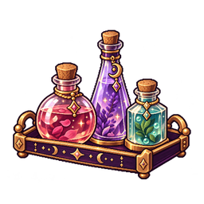
bottle-tray-256 assets/dark-v1.1/decorations/objects/bottle-tray-256.png existing v1.1 runtime resource; optional, no new individual approvalDatei
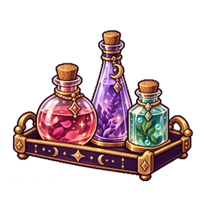
bottle-tray-256 assets/dark-v1.1/decorations/objects/bottle-tray-256.webp existing v1.1 runtime resource; optional, no new individual approvalDateibottle-tray-512 assets/dark-v1.1/decorations/objects/bottle-tray-512.png existing v1.1 runtime resource; optional, no new individual approvalDateibottle-tray-512 assets/dark-v1.1/decorations/objects/bottle-tray-512.webp existing v1.1 runtime resource; optional, no new individual approvalDateicandles-128 assets/dark-v1.1/decorations/objects/candles-128.webp existing v1.1 runtime resource; optional, no new individual approvalDateicandles-256 assets/dark-v1.1/decorations/objects/candles-256.png existing v1.1 runtime resource; optional, no new individual approvalDateicandles-256 assets/dark-v1.1/decorations/objects/candles-256.webp existing v1.1 runtime resource; optional, no new individual approvalDateicandles-512 assets/dark-v1.1/decorations/objects/candles-512.png existing v1.1 runtime resource; optional, no new individual approvalDateicandles-512 assets/dark-v1.1/decorations/objects/candles-512.webp existing v1.1 runtime resource; optional, no new individual approvalDateicode-fragments-128 assets/dark-v1.1/decorations/objects/code-fragments-128.webp existing v1.1 runtime resource; optional, no new individual approvalDatei
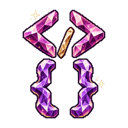
code-fragments-256 assets/dark-v1.1/decorations/objects/code-fragments-256.png existing v1.1 runtime resource; optional, no new individual approvalDateicode-fragments-256 assets/dark-v1.1/decorations/objects/code-fragments-256.webp existing v1.1 runtime resource; optional, no new individual approvalDatei
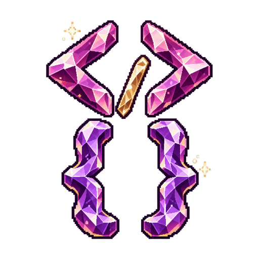
code-fragments-512 assets/dark-v1.1/decorations/objects/code-fragments-512.png existing v1.1 runtime resource; optional, no new individual approvalDateicode-fragments-512 assets/dark-v1.1/decorations/objects/code-fragments-512.webp existing v1.1 runtime resource; optional, no new individual approvalDateicrystals-128 assets/dark-v1.1/decorations/objects/crystals-128.webp existing v1.1 runtime resource; optional, no new individual approvalDateicrystals-256 assets/dark-v1.1/decorations/objects/crystals-256.png existing v1.1 runtime resource; optional, no new individual approvalDatei
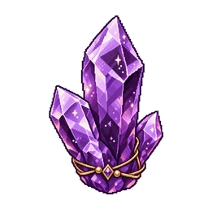
crystals-256 assets/dark-v1.1/decorations/objects/crystals-256.webp existing v1.1 runtime resource; optional, no new individual approvalDateicrystals-512 assets/dark-v1.1/decorations/objects/crystals-512.png existing v1.1 runtime resource; optional, no new individual approvalDateicrystals-512 assets/dark-v1.1/decorations/objects/crystals-512.webp existing v1.1 runtime resource; optional, no new individual approvalDateifennel-cat-mug-128 assets/dark-v1.1/decorations/objects/fennel-cat-mug-128.webp existing v1.1 runtime resource; optional, no new individual approvalDateifennel-cat-mug-256 assets/dark-v1.1/decorations/objects/fennel-cat-mug-256.png existing v1.1 runtime resource; optional, no new individual approvalDateifennel-cat-mug-256 assets/dark-v1.1/decorations/objects/fennel-cat-mug-256.webp existing v1.1 runtime resource; optional, no new individual approvalDateifennel-cat-mug-512 assets/dark-v1.1/decorations/objects/fennel-cat-mug-512.png existing v1.1 runtime resource; optional, no new individual approvalDateifennel-cat-mug-512 assets/dark-v1.1/decorations/objects/fennel-cat-mug-512.webp existing v1.1 runtime resource; optional, no new individual approvalDateifloating-page-128 assets/dark-v1.1/decorations/objects/floating-page-128.webp existing v1.1 runtime resource; optional, no new individual approvalDateifloating-page-256 assets/dark-v1.1/decorations/objects/floating-page-256.png existing v1.1 runtime resource; optional, no new individual approvalDateifloating-page-256 assets/dark-v1.1/decorations/objects/floating-page-256.webp existing v1.1 runtime resource; optional, no new individual approvalDatei
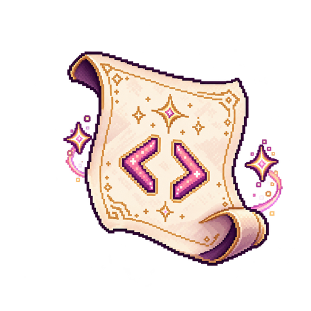
floating-page-512 assets/dark-v1.1/decorations/objects/floating-page-512.png existing v1.1 runtime resource; optional, no new individual approvalDateifloating-page-512 assets/dark-v1.1/decorations/objects/floating-page-512.webp existing v1.1 runtime resource; optional, no new individual approvalDateiivy-128 assets/dark-v1.1/decorations/objects/ivy-128.webp existing v1.1 runtime resource; optional, no new individual approvalDateiivy-256 assets/dark-v1.1/decorations/objects/ivy-256.png existing v1.1 runtime resource; optional, no new individual approvalDateiivy-256 assets/dark-v1.1/decorations/objects/ivy-256.webp existing v1.1 runtime resource; optional, no new individual approvalDateiivy-512 assets/dark-v1.1/decorations/objects/ivy-512.png existing v1.1 runtime resource; optional, no new individual approvalDateiivy-512 assets/dark-v1.1/decorations/objects/ivy-512.webp existing v1.1 runtime resource; optional, no new individual approvalDateikey-128 assets/dark-v1.1/decorations/objects/key-128.webp existing v1.1 runtime resource; optional, no new individual approvalDateikey-256 assets/dark-v1.1/decorations/objects/key-256.png existing v1.1 runtime resource; optional, no new individual approvalDateikey-256 assets/dark-v1.1/decorations/objects/key-256.webp existing v1.1 runtime resource; optional, no new individual approvalDateikey-512 assets/dark-v1.1/decorations/objects/key-512.png existing v1.1 runtime resource; optional, no new individual approvalDateikey-512 assets/dark-v1.1/decorations/objects/key-512.webp existing v1.1 runtime resource; optional, no new individual approvalDateilantern-128 assets/dark-v1.1/decorations/objects/lantern-128.webp existing v1.1 runtime resource; optional, no new individual approvalDateilantern-256 assets/dark-v1.1/decorations/objects/lantern-256.png existing v1.1 runtime resource; optional, no new individual approvalDateilantern-256 assets/dark-v1.1/decorations/objects/lantern-256.webp existing v1.1 runtime resource; optional, no new individual approvalDateilantern-512 assets/dark-v1.1/decorations/objects/lantern-512.png existing v1.1 runtime resource; optional, no new individual approvalDateilantern-512 assets/dark-v1.1/decorations/objects/lantern-512.webp existing v1.1 runtime resource; optional, no new individual approvalDateilight-orb-128 assets/dark-v1.1/decorations/objects/light-orb-128.webp existing v1.1 runtime resource; optional, no new individual approvalDateilight-orb-256 assets/dark-v1.1/decorations/objects/light-orb-256.png existing v1.1 runtime resource; optional, no new individual approvalDateilight-orb-256 assets/dark-v1.1/decorations/objects/light-orb-256.webp existing v1.1 runtime resource; optional, no new individual approvalDateilight-orb-512 assets/dark-v1.1/decorations/objects/light-orb-512.png existing v1.1 runtime resource; optional, no new individual approvalDateilight-orb-512 assets/dark-v1.1/decorations/objects/light-orb-512.webp existing v1.1 runtime resource; optional, no new individual approvalDateimagic-gears-128 assets/dark-v1.1/decorations/objects/magic-gears-128.webp existing v1.1 runtime resource; optional, no new individual approvalDateimagic-gears-256 assets/dark-v1.1/decorations/objects/magic-gears-256.png existing v1.1 runtime resource; optional, no new individual approvalDateimagic-gears-256 assets/dark-v1.1/decorations/objects/magic-gears-256.webp existing v1.1 runtime resource; optional, no new individual approvalDateimagic-gears-512 assets/dark-v1.1/decorations/objects/magic-gears-512.png existing v1.1 runtime resource; optional, no new individual approvalDateimagic-gears-512 assets/dark-v1.1/decorations/objects/magic-gears-512.webp existing v1.1 runtime resource; optional, no new individual approvalDateiopen-spellbook-128 assets/dark-v1.1/decorations/objects/open-spellbook-128.webp existing v1.1 runtime resource; optional, no new individual approvalDateiopen-spellbook-256 assets/dark-v1.1/decorations/objects/open-spellbook-256.png existing v1.1 runtime resource; optional, no new individual approvalDateiopen-spellbook-256 assets/dark-v1.1/decorations/objects/open-spellbook-256.webp existing v1.1 runtime resource; optional, no new individual approvalDateiopen-spellbook-512 assets/dark-v1.1/decorations/objects/open-spellbook-512.png existing v1.1 runtime resource; optional, no new individual approvalDateiopen-spellbook-512 assets/dark-v1.1/decorations/objects/open-spellbook-512.webp existing v1.1 runtime resource; optional, no new individual approvalDateipotion-128 assets/dark-v1.1/decorations/objects/potion-128.webp existing v1.1 runtime resource; optional, no new individual approvalDateipotion-256 assets/dark-v1.1/decorations/objects/potion-256.png existing v1.1 runtime resource; optional, no new individual approvalDateipotion-256 assets/dark-v1.1/decorations/objects/potion-256.webp existing v1.1 runtime resource; optional, no new individual approvalDateipotion-512 assets/dark-v1.1/decorations/objects/potion-512.png existing v1.1 runtime resource; optional, no new individual approvalDatei
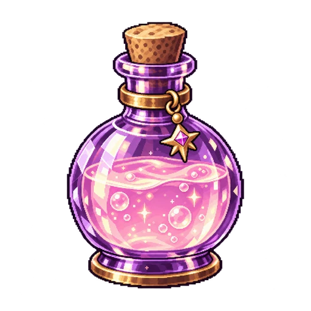
potion-512 assets/dark-v1.1/decorations/objects/potion-512.webp existing v1.1 runtime resource; optional, no new individual approvalDateipotted-plant-128 assets/dark-v1.1/decorations/objects/potted-plant-128.webp existing v1.1 runtime resource; optional, no new individual approvalDateipotted-plant-256 assets/dark-v1.1/decorations/objects/potted-plant-256.png existing v1.1 runtime resource; optional, no new individual approvalDateipotted-plant-256 assets/dark-v1.1/decorations/objects/potted-plant-256.webp existing v1.1 runtime resource; optional, no new individual approvalDateipotted-plant-512 assets/dark-v1.1/decorations/objects/potted-plant-512.png existing v1.1 runtime resource; optional, no new individual approvalDateipotted-plant-512 assets/dark-v1.1/decorations/objects/potted-plant-512.webp existing v1.1 runtime resource; optional, no new individual approvalDateiquill-ink-128 assets/dark-v1.1/decorations/objects/quill-ink-128.webp existing v1.1 runtime resource; optional, no new individual approvalDateiquill-ink-256 assets/dark-v1.1/decorations/objects/quill-ink-256.png existing v1.1 runtime resource; optional, no new individual approvalDateiquill-ink-256 assets/dark-v1.1/decorations/objects/quill-ink-256.webp existing v1.1 runtime resource; optional, no new individual approvalDateiquill-ink-512 assets/dark-v1.1/decorations/objects/quill-ink-512.png existing v1.1 runtime resource; optional, no new individual approvalDateiquill-ink-512 assets/dark-v1.1/decorations/objects/quill-ink-512.webp existing v1.1 runtime resource; optional, no new individual approvalDateiscroll-128 assets/dark-v1.1/decorations/objects/scroll-128.webp existing v1.1 runtime resource; optional, no new individual approvalDateiscroll-256 assets/dark-v1.1/decorations/objects/scroll-256.png existing v1.1 runtime resource; optional, no new individual approvalDateiscroll-256 assets/dark-v1.1/decorations/objects/scroll-256.webp existing v1.1 runtime resource; optional, no new individual approvalDateiscroll-512 assets/dark-v1.1/decorations/objects/scroll-512.png existing v1.1 runtime resource; optional, no new individual approvalDateiscroll-512 assets/dark-v1.1/decorations/objects/scroll-512.webp existing v1.1 runtime resource; optional, no new individual approvalDateistar-charm-128 assets/dark-v1.1/decorations/objects/star-charm-128.webp existing v1.1 runtime resource; optional, no new individual approvalDateistar-charm-256 assets/dark-v1.1/decorations/objects/star-charm-256.png existing v1.1 runtime resource; optional, no new individual approvalDateistar-charm-256 assets/dark-v1.1/decorations/objects/star-charm-256.webp existing v1.1 runtime resource; optional, no new individual approvalDateistar-charm-512 assets/dark-v1.1/decorations/objects/star-charm-512.png existing v1.1 runtime resource; optional, no new individual approvalDateistar-charm-512 assets/dark-v1.1/decorations/objects/star-charm-512.webp existing v1.1 runtime resource; optional, no new individual approvalDatei
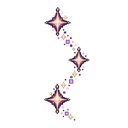
stardust-128 assets/dark-v1.1/decorations/objects/stardust-128.webp existing v1.1 runtime resource; optional, no new individual approvalDatei
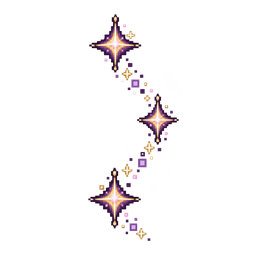
stardust-256 assets/dark-v1.1/decorations/objects/stardust-256.png existing v1.1 runtime resource; optional, no new individual approvalDatei
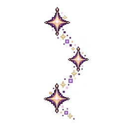
stardust-256 assets/dark-v1.1/decorations/objects/stardust-256.webp existing v1.1 runtime resource; optional, no new individual approvalDatei
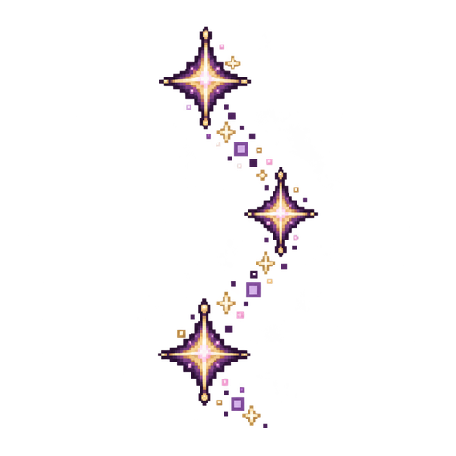
stardust-512 assets/dark-v1.1/decorations/objects/stardust-512.png existing v1.1 runtime resource; optional, no new individual approvalDatei
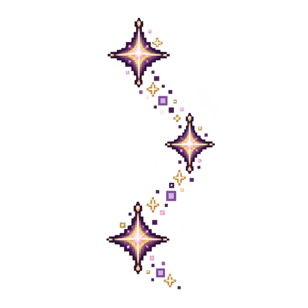
stardust-512 assets/dark-v1.1/decorations/objects/stardust-512.webp existing v1.1 runtime resource; optional, no new individual approvalDateitelescope-128 assets/dark-v1.1/decorations/objects/telescope-128.webp existing v1.1 runtime resource; optional, no new individual approvalDateitelescope-256 assets/dark-v1.1/decorations/objects/telescope-256.png existing v1.1 runtime resource; optional, no new individual approvalDateitelescope-256 assets/dark-v1.1/decorations/objects/telescope-256.webp existing v1.1 runtime resource; optional, no new individual approvalDateitelescope-512 assets/dark-v1.1/decorations/objects/telescope-512.png existing v1.1 runtime resource; optional, no new individual approvalDateitelescope-512 assets/dark-v1.1/decorations/objects/telescope-512.webp existing v1.1 runtime resource; optional, no new individual approvalDateitoolbox-128 assets/dark-v1.1/decorations/objects/toolbox-128.webp existing v1.1 runtime resource; optional, no new individual approvalDateitoolbox-256 assets/dark-v1.1/decorations/objects/toolbox-256.png existing v1.1 runtime resource; optional, no new individual approvalDateitoolbox-256 assets/dark-v1.1/decorations/objects/toolbox-256.webp existing v1.1 runtime resource; optional, no new individual approvalDateitoolbox-512 assets/dark-v1.1/decorations/objects/toolbox-512.png existing v1.1 runtime resource; optional, no new individual approvalDateitoolbox-512 assets/dark-v1.1/decorations/objects/toolbox-512.webp existing v1.1 runtime resource; optional, no new individual approvalDatei
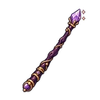
wand-128 assets/dark-v1.1/decorations/objects/wand-128.webp existing v1.1 runtime resource; optional, no new individual approvalDateiwand-256 assets/dark-v1.1/decorations/objects/wand-256.png existing v1.1 runtime resource; optional, no new individual approvalDatei
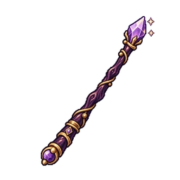
wand-256 assets/dark-v1.1/decorations/objects/wand-256.webp existing v1.1 runtime resource; optional, no new individual approvalDateiwand-512 assets/dark-v1.1/decorations/objects/wand-512.png existing v1.1 runtime resource; optional, no new individual approvalDateiwand-512 assets/dark-v1.1/decorations/objects/wand-512.webp existing v1.1 runtime resource; optional, no new individual approvalDateiworkshop-arrangement-128 assets/dark-v1.1/decorations/objects/workshop-arrangement-128.webp existing v1.1 runtime resource; optional, no new individual approvalDateiworkshop-arrangement-256 assets/dark-v1.1/decorations/objects/workshop-arrangement-256.png existing v1.1 runtime resource; optional, no new individual approvalDateiworkshop-arrangement-256 assets/dark-v1.1/decorations/objects/workshop-arrangement-256.webp existing v1.1 runtime resource; optional, no new individual approvalDateiworkshop-arrangement-512 assets/dark-v1.1/decorations/objects/workshop-arrangement-512.png existing v1.1 runtime resource; optional, no new individual approvalDateiworkshop-arrangement-512 assets/dark-v1.1/decorations/objects/workshop-arrangement-512.webp existing v1.1 runtime resource; optional, no new individual approvalDateiworkshop-window-128 assets/dark-v1.1/decorations/objects/workshop-window-128.webp existing v1.1 runtime resource; optional, no new individual approvalDateiworkshop-window-256 assets/dark-v1.1/decorations/objects/workshop-window-256.png existing v1.1 runtime resource; optional, no new individual approvalDateiworkshop-window-256 assets/dark-v1.1/decorations/objects/workshop-window-256.webp existing v1.1 runtime resource; optional, no new individual approvalDateiworkshop-window-512 assets/dark-v1.1/decorations/objects/workshop-window-512.png existing v1.1 runtime resource; optional, no new individual approvalDateiworkshop-window-512 assets/dark-v1.1/decorations/objects/workshop-window-512.webp existing v1.1 runtime resource; optional, no new individual approvalDateiabout assets/dark-v1.1/icons/about.svg existing v1.1 runtime resource; optional, no new individual approvalDateiback assets/dark-v1.1/icons/back.svg existing v1.1 runtime resource; optional, no new individual approvalDateibook assets/dark-v1.1/icons/book.svg existing v1.1 runtime resource; optional, no new individual approvalDateibug assets/dark-v1.1/icons/bug.svg existing v1.1 runtime resource; optional, no new individual approvalDateiclose assets/dark-v1.1/icons/close.svg existing v1.1 runtime resource; optional, no new individual approvalDateicode assets/dark-v1.1/icons/code.svg existing v1.1 runtime resource; optional, no new individual approvalDateicollapse assets/dark-v1.1/icons/collapse.svg existing v1.1 runtime resource; optional, no new individual approvalDateidocumentation assets/dark-v1.1/icons/documentation.svg existing v1.1 runtime resource; optional, no new individual approvalDateidownload assets/dark-v1.1/icons/download.svg existing v1.1 runtime resource; optional, no new individual approvalDateierror assets/dark-v1.1/icons/error.svg existing v1.1 runtime resource; optional, no new individual approvalDateiexpand assets/dark-v1.1/icons/expand.svg existing v1.1 runtime resource; optional, no new individual approvalDateifavorite assets/dark-v1.1/icons/favorite.svg existing v1.1 runtime resource; optional, no new individual approvalDateifile assets/dark-v1.1/icons/file.svg existing v1.1 runtime resource; optional, no new individual approvalDateifolder assets/dark-v1.1/icons/folder.svg existing v1.1 runtime resource; optional, no new individual approvalDateiforward assets/dark-v1.1/icons/forward.svg existing v1.1 runtime resource; optional, no new individual approvalDateigithub assets/dark-v1.1/icons/github.svg existing v1.1 runtime resource; optional, no new individual approvalDateihome assets/dark-v1.1/icons/home.svg existing v1.1 runtime resource; optional, no new individual approvalDateilantern assets/dark-v1.1/icons/lantern.svg existing v1.1 runtime resource; optional, no new individual approvalDateimagic assets/dark-v1.1/icons/magic.svg existing v1.1 runtime resource; optional, no new individual approvalDateimenu assets/dark-v1.1/icons/menu.svg existing v1.1 runtime resource; optional, no new individual approvalDateiportfolio assets/dark-v1.1/icons/portfolio.svg existing v1.1 runtime resource; optional, no new individual approvalDateipotion assets/dark-v1.1/icons/potion.svg existing v1.1 runtime resource; optional, no new individual approvalDateiprojects assets/dark-v1.1/icons/projects.svg existing v1.1 runtime resource; optional, no new individual approvalDateiscroll assets/dark-v1.1/icons/scroll.svg existing v1.1 runtime resource; optional, no new individual approvalDateisearch assets/dark-v1.1/icons/search.svg existing v1.1 runtime resource; optional, no new individual approvalDateisettings assets/dark-v1.1/icons/settings.svg existing v1.1 runtime resource; optional, no new individual approvalDateistar assets/dark-v1.1/icons/star.svg existing v1.1 runtime resource; optional, no new individual approvalDateisuccess assets/dark-v1.1/icons/success.svg existing v1.1 runtime resource; optional, no new individual approvalDateiterminal assets/dark-v1.1/icons/terminal.svg existing v1.1 runtime resource; optional, no new individual approvalDateigithub-black assets/dark-v1.1/icons/variants/github-black.svg existing v1.1 runtime resource; optional, no new individual approvalDateiwand assets/dark-v1.1/icons/wand.svg existing v1.1 runtime resource; optional, no new individual approvalDateiwarning assets/dark-v1.1/icons/warning.svg existing v1.1 runtime resource; optional, no new individual approvalDatei
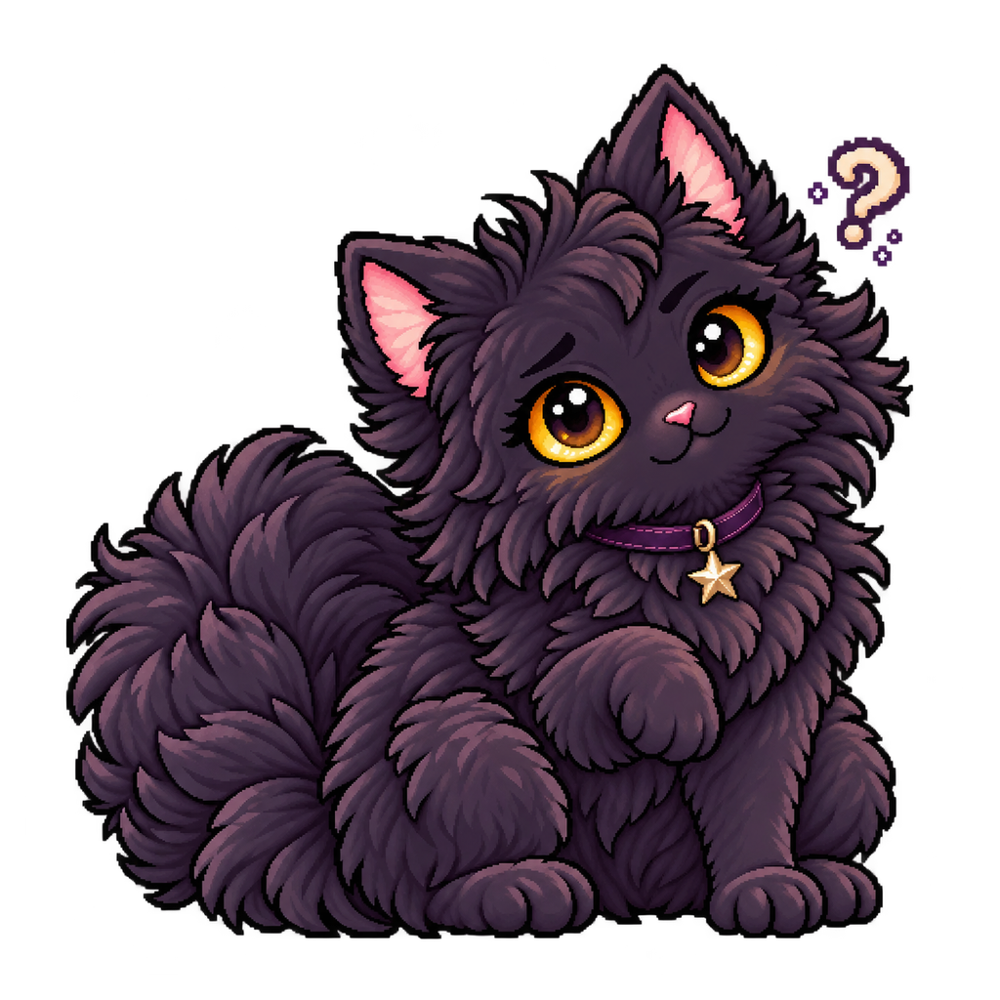
floof-confused-1024 assets/dark-v1.1/illustrations/floof/floof-confused-1024.png existing v1.1 runtime resource; optional, no new individual approvalDateifloof-confused-512 assets/dark-v1.1/illustrations/floof/floof-confused-512.webp existing v1.1 runtime resource; optional, no new individual approvalDateifloof-confused-768 assets/dark-v1.1/illustrations/floof/floof-confused-768.webp existing v1.1 runtime resource; optional, no new individual approvalDatei
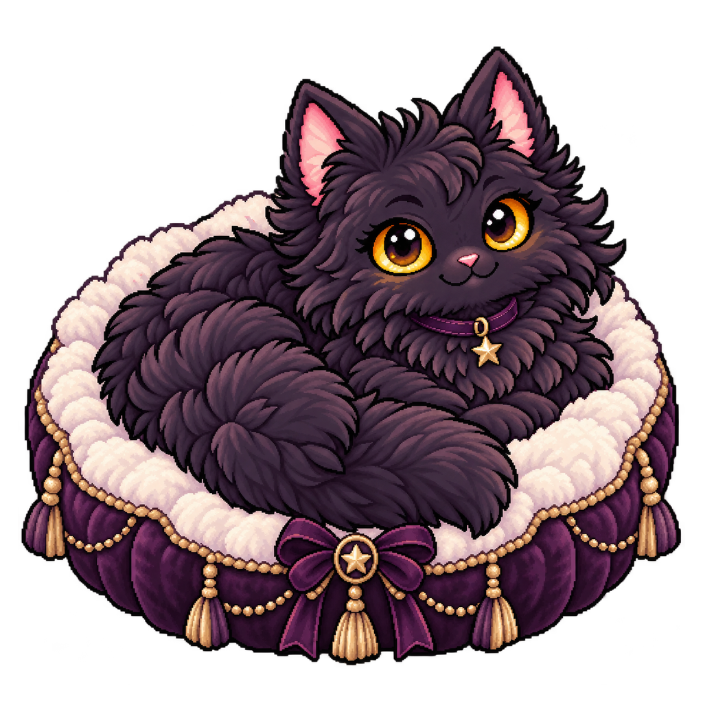
floof-cozy-1024 assets/dark-v1.1/illustrations/floof/floof-cozy-1024.png existing v1.1 runtime resource; optional, no new individual approvalDateifloof-cozy-512 assets/dark-v1.1/illustrations/floof/floof-cozy-512.webp existing v1.1 runtime resource; optional, no new individual approvalDateifloof-cozy-768 assets/dark-v1.1/illustrations/floof/floof-cozy-768.webp existing v1.1 runtime resource; optional, no new individual approvalDateifloof-excited-1024 assets/dark-v1.1/illustrations/floof/floof-excited-1024.png existing v1.1 runtime resource; optional, no new individual approvalDateifloof-excited-512 assets/dark-v1.1/illustrations/floof/floof-excited-512.webp existing v1.1 runtime resource; optional, no new individual approvalDatei
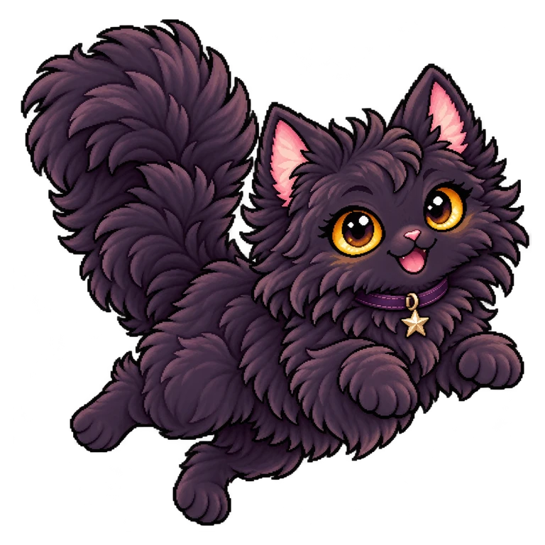
floof-excited-768 assets/dark-v1.1/illustrations/floof/floof-excited-768.webp existing v1.1 runtime resource; optional, no new individual approvalDateifloof-guarding-documentation-1024 assets/dark-v1.1/illustrations/floof/floof-guarding-documentation-1024.png existing v1.1 runtime resource; optional, no new individual approvalDateifloof-guarding-documentation-512 assets/dark-v1.1/illustrations/floof/floof-guarding-documentation-512.webp existing v1.1 runtime resource; optional, no new individual approvalDateifloof-guarding-documentation-768 assets/dark-v1.1/illustrations/floof/floof-guarding-documentation-768.webp existing v1.1 runtime resource; optional, no new individual approvalDateifloof-happy-1024 assets/dark-v1.1/illustrations/floof/floof-happy-1024.png existing v1.1 runtime resource; optional, no new individual approvalDateifloof-happy-512 assets/dark-v1.1/illustrations/floof/floof-happy-512.webp existing v1.1 runtime resource; optional, no new individual approvalDateifloof-happy-768 assets/dark-v1.1/illustrations/floof/floof-happy-768.webp existing v1.1 runtime resource; optional, no new individual approvalDatei
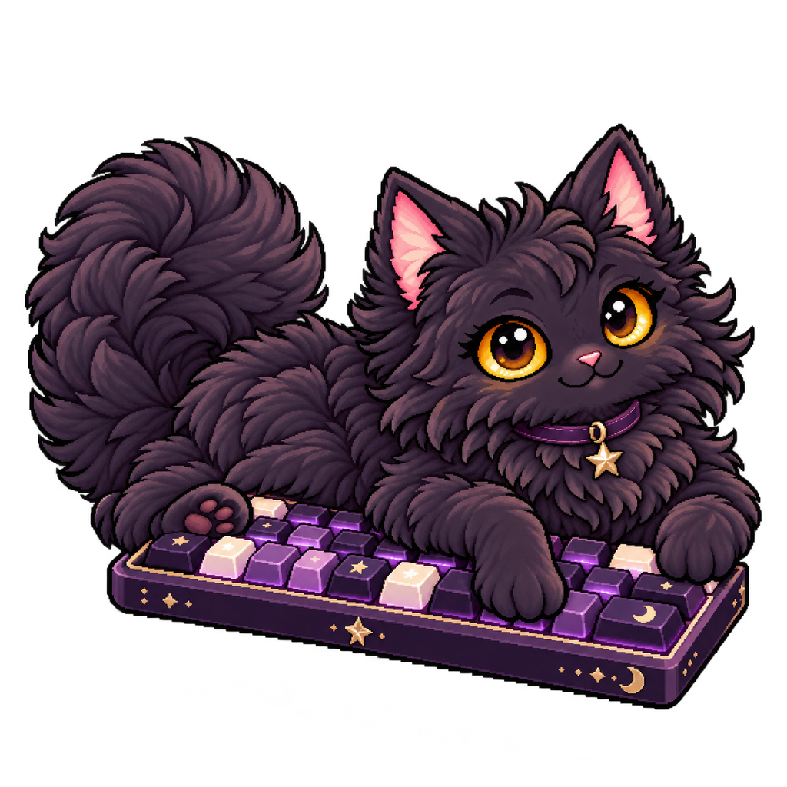
floof-keyboard-rest-1024 assets/dark-v1.1/illustrations/floof/floof-keyboard-rest-1024.png existing v1.1 runtime resource; optional, no new individual approvalDatei
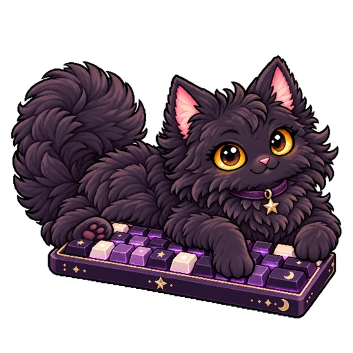
floof-keyboard-rest-512 assets/dark-v1.1/illustrations/floof/floof-keyboard-rest-512.webp existing v1.1 runtime resource; optional, no new individual approvalDateifloof-keyboard-rest-768 assets/dark-v1.1/illustrations/floof/floof-keyboard-rest-768.webp existing v1.1 runtime resource; optional, no new individual approvalDatei
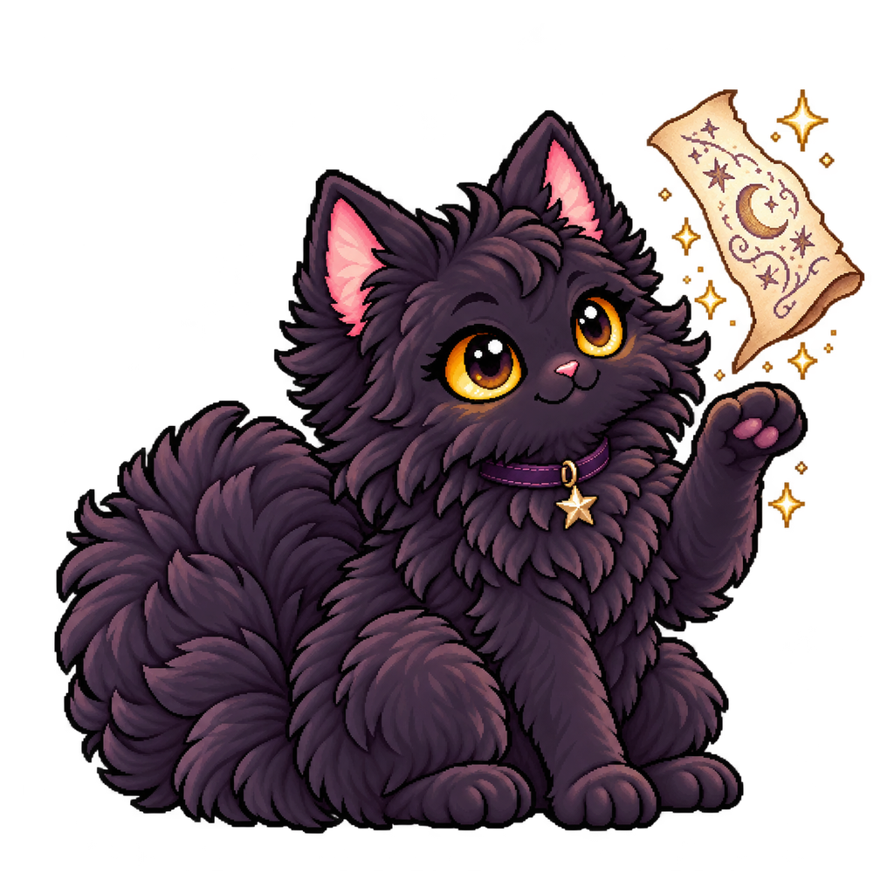
floof-magical-1024 assets/dark-v1.1/illustrations/floof/floof-magical-1024.png existing v1.1 runtime resource; optional, no new individual approvalDateifloof-magical-512 assets/dark-v1.1/illustrations/floof/floof-magical-512.webp existing v1.1 runtime resource; optional, no new individual approvalDatei
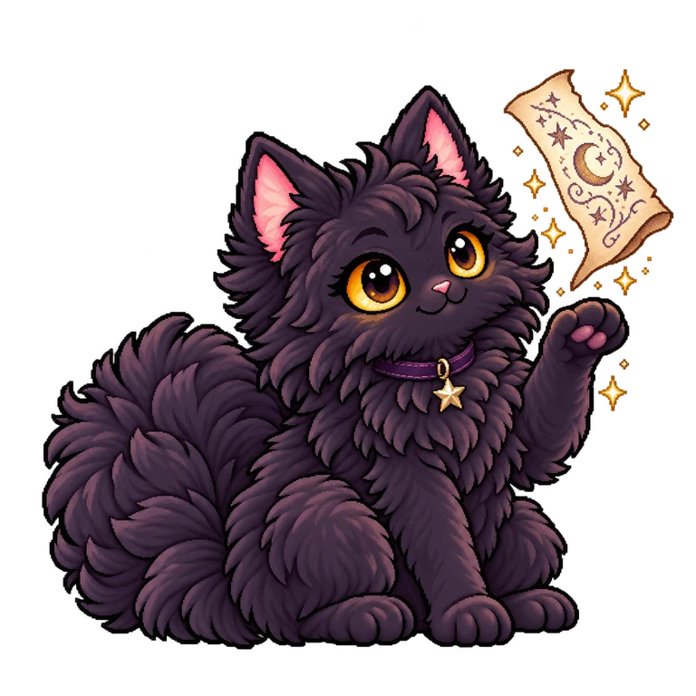
floof-magical-768 assets/dark-v1.1/illustrations/floof/floof-magical-768.webp existing v1.1 runtime resource; optional, no new individual approvalDateifloof-napping-on-books-1024 assets/dark-v1.1/illustrations/floof/floof-napping-on-books-1024.png existing v1.1 runtime resource; optional, no new individual approvalDateifloof-napping-on-books-512 assets/dark-v1.1/illustrations/floof/floof-napping-on-books-512.webp existing v1.1 runtime resource; optional, no new individual approvalDateifloof-napping-on-books-768 assets/dark-v1.1/illustrations/floof/floof-napping-on-books-768.webp existing v1.1 runtime resource; optional, no new individual approvalDatei
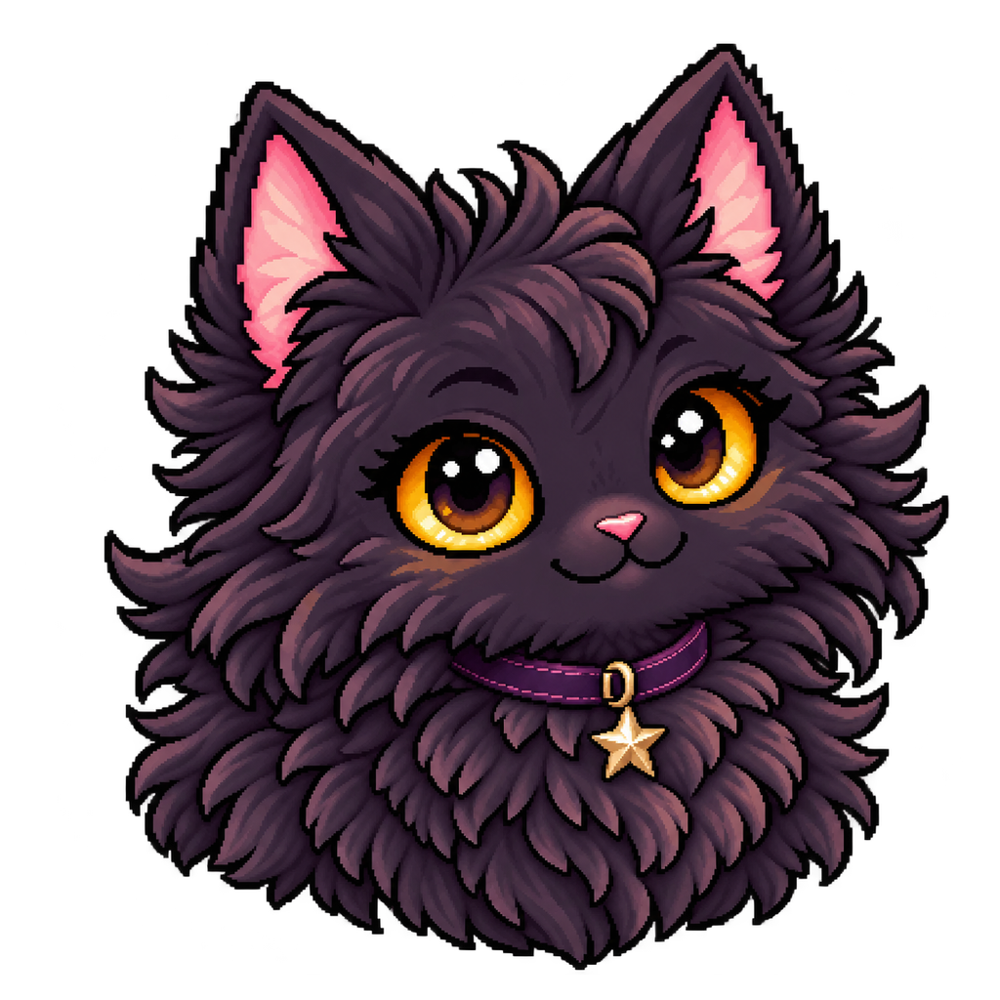
floof-portrait-1024 assets/dark-v1.1/illustrations/floof/floof-portrait-1024.png existing v1.1 runtime resource; optional, no new individual approvalDateifloof-portrait-256 assets/dark-v1.1/illustrations/floof/floof-portrait-256.webp existing v1.1 runtime resource; optional, no new individual approvalDateifloof-portrait-512 assets/dark-v1.1/illustrations/floof/floof-portrait-512.webp existing v1.1 runtime resource; optional, no new individual approvalDateifloof-portrait-768 assets/dark-v1.1/illustrations/floof/floof-portrait-768.webp existing v1.1 runtime resource; optional, no new individual approvalDateifloof-scroll-investigation-1024 assets/dark-v1.1/illustrations/floof/floof-scroll-investigation-1024.png existing v1.1 runtime resource; optional, no new individual approvalDatei
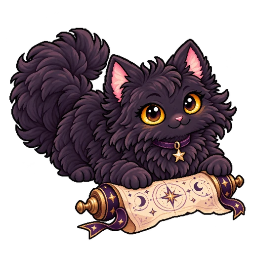
floof-scroll-investigation-512 assets/dark-v1.1/illustrations/floof/floof-scroll-investigation-512.webp existing v1.1 runtime resource; optional, no new individual approvalDateifloof-scroll-investigation-768 assets/dark-v1.1/illustrations/floof/floof-scroll-investigation-768.webp existing v1.1 runtime resource; optional, no new individual approvalDatei
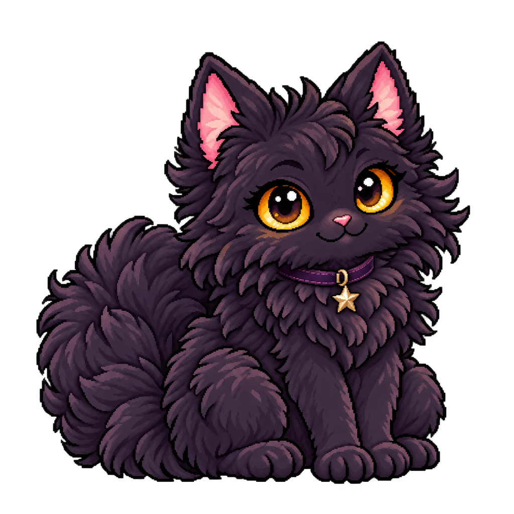
floof-signature-1024 assets/dark-v1.1/illustrations/floof/floof-signature-1024.png existing v1.1 runtime resource; optional, no new individual approvalDateifloof-signature-512 assets/dark-v1.1/illustrations/floof/floof-signature-512.webp existing v1.1 runtime resource; optional, no new individual approvalDateifloof-signature-768 assets/dark-v1.1/illustrations/floof/floof-signature-768.webp existing v1.1 runtime resource; optional, no new individual approvalDatei
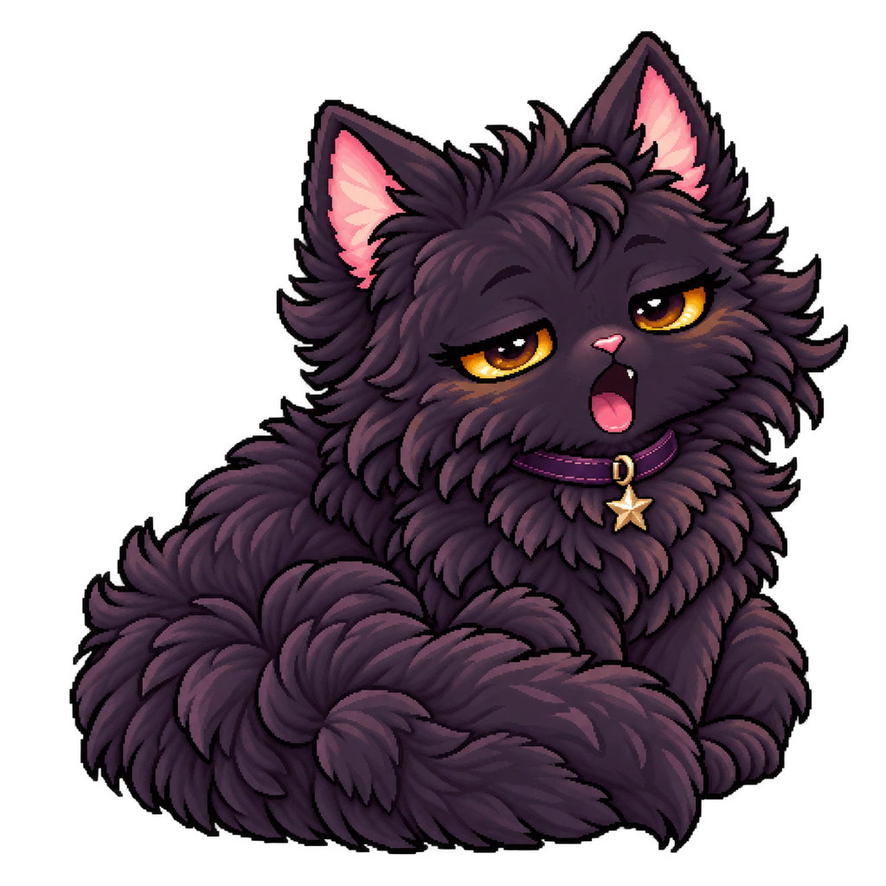
floof-sleepy-1024 assets/dark-v1.1/illustrations/floof/floof-sleepy-1024.png existing v1.1 runtime resource; optional, no new individual approvalDateifloof-sleepy-512 assets/dark-v1.1/illustrations/floof/floof-sleepy-512.webp existing v1.1 runtime resource; optional, no new individual approvalDateifloof-sleepy-768 assets/dark-v1.1/illustrations/floof/floof-sleepy-768.webp existing v1.1 runtime resource; optional, no new individual approvalDateifloof-thinking-1024 assets/dark-v1.1/illustrations/floof/floof-thinking-1024.png existing v1.1 runtime resource; optional, no new individual approvalDateifloof-thinking-512 assets/dark-v1.1/illustrations/floof/floof-thinking-512.webp existing v1.1 runtime resource; optional, no new individual approvalDateifloof-thinking-768 assets/dark-v1.1/illustrations/floof/floof-thinking-768.webp existing v1.1 runtime resource; optional, no new individual approvalDateifloof-working-1024 assets/dark-v1.1/illustrations/floof/floof-working-1024.png existing v1.1 runtime resource; optional, no new individual approvalDateifloof-working-512 assets/dark-v1.1/illustrations/floof/floof-working-512.webp existing v1.1 runtime resource; optional, no new individual approvalDateifloof-working-768 assets/dark-v1.1/illustrations/floof/floof-working-768.webp existing v1.1 runtime resource; optional, no new individual approvalDateicozy-library-1024 assets/dark-v1.1/illustrations/groups/cozy-library-1024.png existing v1.1 runtime resource; optional, no new individual approvalDateicozy-library-512 assets/dark-v1.1/illustrations/groups/cozy-library-512.webp existing v1.1 runtime resource; optional, no new individual approvalDateicozy-library-768 assets/dark-v1.1/illustrations/groups/cozy-library-768.webp existing v1.1 runtime resource; optional, no new individual approvalDateicrew-coding-1024 assets/dark-v1.1/illustrations/groups/crew-coding-1024.png existing v1.1 runtime resource; optional, no new individual approvalDateicrew-coding-512 assets/dark-v1.1/illustrations/groups/crew-coding-512.webp existing v1.1 runtime resource; optional, no new individual approvalDateicrew-coding-768 assets/dark-v1.1/illustrations/groups/crew-coding-768.webp existing v1.1 runtime resource; optional, no new individual approvalDateicrew-portrait-1024 assets/dark-v1.1/illustrations/groups/crew-portrait-1024.png existing v1.1 runtime resource; optional, no new individual approvalDateicrew-portrait-256 assets/dark-v1.1/illustrations/groups/crew-portrait-256.webp existing v1.1 runtime resource; optional, no new individual approvalDateicrew-portrait-512 assets/dark-v1.1/illustrations/groups/crew-portrait-512.webp existing v1.1 runtime resource; optional, no new individual approvalDateicrew-portrait-768 assets/dark-v1.1/illustrations/groups/crew-portrait-768.webp existing v1.1 runtime resource; optional, no new individual approvalDatei
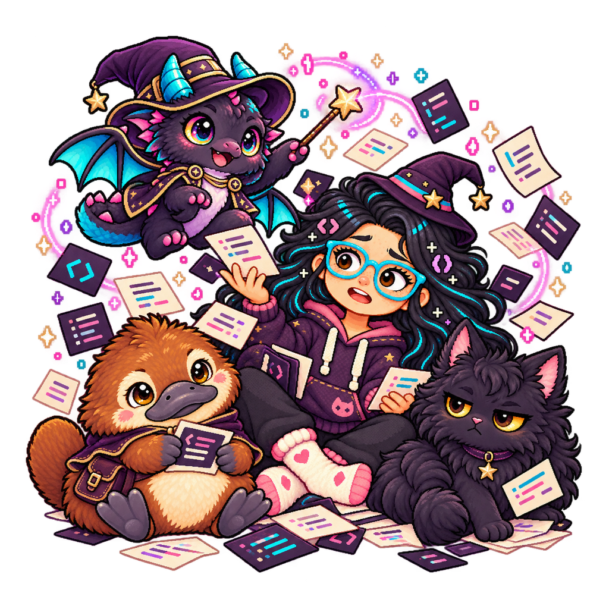
magical-chaos-1024 assets/dark-v1.1/illustrations/groups/magical-chaos-1024.png existing v1.1 runtime resource; optional, no new individual approvalDateimagical-chaos-512 assets/dark-v1.1/illustrations/groups/magical-chaos-512.webp existing v1.1 runtime resource; optional, no new individual approvalDatei
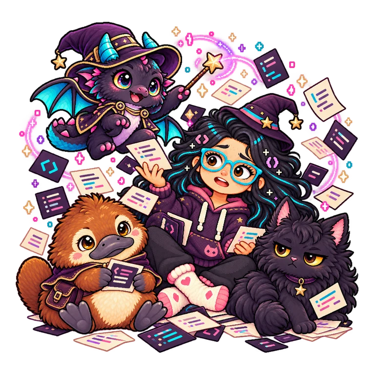
magical-chaos-768 assets/dark-v1.1/illustrations/groups/magical-chaos-768.webp existing v1.1 runtime resource; optional, no new individual approvalDateipixel-kat-floof-tea-documentation-1024 assets/dark-v1.1/illustrations/groups/pixel-kat-floof-tea-documentation-1024.png existing v1.1 runtime resource; optional, no new individual approvalDateipixel-kat-floof-tea-documentation-512 assets/dark-v1.1/illustrations/groups/pixel-kat-floof-tea-documentation-512.webp existing v1.1 runtime resource; optional, no new individual approvalDateipixel-kat-floof-tea-documentation-768 assets/dark-v1.1/illustrations/groups/pixel-kat-floof-tea-documentation-768.webp existing v1.1 runtime resource; optional, no new individual approvalDateiplopp-nibbs-discovery-1024 assets/dark-v1.1/illustrations/groups/plopp-nibbs-discovery-1024.png existing v1.1 runtime resource; optional, no new individual approvalDateiplopp-nibbs-discovery-512 assets/dark-v1.1/illustrations/groups/plopp-nibbs-discovery-512.webp existing v1.1 runtime resource; optional, no new individual approvalDateiplopp-nibbs-discovery-768 assets/dark-v1.1/illustrations/groups/plopp-nibbs-discovery-768.webp existing v1.1 runtime resource; optional, no new individual approvalDateinibbs-confused-1024 assets/dark-v1.1/illustrations/nibbs/nibbs-confused-1024.png existing v1.1 runtime resource; optional, no new individual approvalDateinibbs-confused-512 assets/dark-v1.1/illustrations/nibbs/nibbs-confused-512.webp existing v1.1 runtime resource; optional, no new individual approvalDateinibbs-confused-768 assets/dark-v1.1/illustrations/nibbs/nibbs-confused-768.webp existing v1.1 runtime resource; optional, no new individual approvalDateinibbs-cozy-1024 assets/dark-v1.1/illustrations/nibbs/nibbs-cozy-1024.png existing v1.1 runtime resource; optional, no new individual approvalDateinibbs-cozy-512 assets/dark-v1.1/illustrations/nibbs/nibbs-cozy-512.webp existing v1.1 runtime resource; optional, no new individual approvalDateinibbs-cozy-768 assets/dark-v1.1/illustrations/nibbs/nibbs-cozy-768.webp existing v1.1 runtime resource; optional, no new individual approvalDateinibbs-crystal-research-1024 assets/dark-v1.1/illustrations/nibbs/nibbs-crystal-research-1024.png existing v1.1 runtime resource; optional, no new individual approvalDateinibbs-crystal-research-512 assets/dark-v1.1/illustrations/nibbs/nibbs-crystal-research-512.webp existing v1.1 runtime resource; optional, no new individual approvalDateinibbs-crystal-research-768 assets/dark-v1.1/illustrations/nibbs/nibbs-crystal-research-768.webp existing v1.1 runtime resource; optional, no new individual approvalDateinibbs-enchanted-bag-find-1024 assets/dark-v1.1/illustrations/nibbs/nibbs-enchanted-bag-find-1024.png existing v1.1 runtime resource; optional, no new individual approvalDateinibbs-enchanted-bag-find-512 assets/dark-v1.1/illustrations/nibbs/nibbs-enchanted-bag-find-512.webp existing v1.1 runtime resource; optional, no new individual approvalDateinibbs-enchanted-bag-find-768 assets/dark-v1.1/illustrations/nibbs/nibbs-enchanted-bag-find-768.webp existing v1.1 runtime resource; optional, no new individual approvalDateinibbs-excited-1024 assets/dark-v1.1/illustrations/nibbs/nibbs-excited-1024.png existing v1.1 runtime resource; optional, no new individual approvalDateinibbs-excited-512 assets/dark-v1.1/illustrations/nibbs/nibbs-excited-512.webp existing v1.1 runtime resource; optional, no new individual approvalDateinibbs-excited-768 assets/dark-v1.1/illustrations/nibbs/nibbs-excited-768.webp existing v1.1 runtime resource; optional, no new individual approvalDateinibbs-happy-1024 assets/dark-v1.1/illustrations/nibbs/nibbs-happy-1024.png existing v1.1 runtime resource; optional, no new individual approvalDateinibbs-happy-512 assets/dark-v1.1/illustrations/nibbs/nibbs-happy-512.webp existing v1.1 runtime resource; optional, no new individual approvalDateinibbs-happy-768 assets/dark-v1.1/illustrations/nibbs/nibbs-happy-768.webp existing v1.1 runtime resource; optional, no new individual approvalDateinibbs-magical-1024 assets/dark-v1.1/illustrations/nibbs/nibbs-magical-1024.png existing v1.1 runtime resource; optional, no new individual approvalDateinibbs-magical-512 assets/dark-v1.1/illustrations/nibbs/nibbs-magical-512.webp existing v1.1 runtime resource; optional, no new individual approvalDateinibbs-magical-768 assets/dark-v1.1/illustrations/nibbs/nibbs-magical-768.webp existing v1.1 runtime resource; optional, no new individual approvalDateinibbs-portrait-1024 assets/dark-v1.1/illustrations/nibbs/nibbs-portrait-1024.png existing v1.1 runtime resource; optional, no new individual approvalDateinibbs-portrait-256 assets/dark-v1.1/illustrations/nibbs/nibbs-portrait-256.webp existing v1.1 runtime resource; optional, no new individual approvalDateinibbs-portrait-512 assets/dark-v1.1/illustrations/nibbs/nibbs-portrait-512.webp existing v1.1 runtime resource; optional, no new individual approvalDateinibbs-portrait-768 assets/dark-v1.1/illustrations/nibbs/nibbs-portrait-768.webp existing v1.1 runtime resource; optional, no new individual approvalDateinibbs-scroll-bundle-1024 assets/dark-v1.1/illustrations/nibbs/nibbs-scroll-bundle-1024.png existing v1.1 runtime resource; optional, no new individual approvalDateinibbs-scroll-bundle-512 assets/dark-v1.1/illustrations/nibbs/nibbs-scroll-bundle-512.webp existing v1.1 runtime resource; optional, no new individual approvalDateinibbs-scroll-bundle-768 assets/dark-v1.1/illustrations/nibbs/nibbs-scroll-bundle-768.webp existing v1.1 runtime resource; optional, no new individual approvalDateinibbs-signature-1024 assets/dark-v1.1/illustrations/nibbs/nibbs-signature-1024.png existing v1.1 runtime resource; optional, no new individual approvalDateinibbs-signature-512 assets/dark-v1.1/illustrations/nibbs/nibbs-signature-512.webp existing v1.1 runtime resource; optional, no new individual approvalDateinibbs-signature-768 assets/dark-v1.1/illustrations/nibbs/nibbs-signature-768.webp existing v1.1 runtime resource; optional, no new individual approvalDateinibbs-sleepy-1024 assets/dark-v1.1/illustrations/nibbs/nibbs-sleepy-1024.png existing v1.1 runtime resource; optional, no new individual approvalDateinibbs-sleepy-512 assets/dark-v1.1/illustrations/nibbs/nibbs-sleepy-512.webp existing v1.1 runtime resource; optional, no new individual approvalDateinibbs-sleepy-768 assets/dark-v1.1/illustrations/nibbs/nibbs-sleepy-768.webp existing v1.1 runtime resource; optional, no new individual approvalDateinibbs-thinking-1024 assets/dark-v1.1/illustrations/nibbs/nibbs-thinking-1024.png existing v1.1 runtime resource; optional, no new individual approvalDateinibbs-thinking-512 assets/dark-v1.1/illustrations/nibbs/nibbs-thinking-512.webp existing v1.1 runtime resource; optional, no new individual approvalDateinibbs-thinking-768 assets/dark-v1.1/illustrations/nibbs/nibbs-thinking-768.webp existing v1.1 runtime resource; optional, no new individual approvalDateinibbs-working-1024 assets/dark-v1.1/illustrations/nibbs/nibbs-working-1024.png existing v1.1 runtime resource; optional, no new individual approvalDateinibbs-working-512 assets/dark-v1.1/illustrations/nibbs/nibbs-working-512.webp existing v1.1 runtime resource; optional, no new individual approvalDateinibbs-working-768 assets/dark-v1.1/illustrations/nibbs/nibbs-working-768.webp existing v1.1 runtime resource; optional, no new individual approvalDateipixel-kat-confused-1024 assets/dark-v1.1/illustrations/pixel-kat/pixel-kat-confused-1024.png existing v1.1 runtime resource; optional, no new individual approvalDateipixel-kat-confused-512 assets/dark-v1.1/illustrations/pixel-kat/pixel-kat-confused-512.webp existing v1.1 runtime resource; optional, no new individual approvalDateipixel-kat-confused-768 assets/dark-v1.1/illustrations/pixel-kat/pixel-kat-confused-768.webp existing v1.1 runtime resource; optional, no new individual approvalDateipixel-kat-cozy-1024 assets/dark-v1.1/illustrations/pixel-kat/pixel-kat-cozy-1024.png existing v1.1 runtime resource; optional, no new individual approvalDateipixel-kat-cozy-512 assets/dark-v1.1/illustrations/pixel-kat/pixel-kat-cozy-512.webp existing v1.1 runtime resource; optional, no new individual approvalDateipixel-kat-cozy-768 assets/dark-v1.1/illustrations/pixel-kat/pixel-kat-cozy-768.webp existing v1.1 runtime resource; optional, no new individual approvalDateipixel-kat-excited-1024 assets/dark-v1.1/illustrations/pixel-kat/pixel-kat-excited-1024.png existing v1.1 runtime resource; optional, no new individual approvalDateipixel-kat-excited-512 assets/dark-v1.1/illustrations/pixel-kat/pixel-kat-excited-512.webp existing v1.1 runtime resource; optional, no new individual approvalDateipixel-kat-excited-768 assets/dark-v1.1/illustrations/pixel-kat/pixel-kat-excited-768.webp existing v1.1 runtime resource; optional, no new individual approvalDateipixel-kat-fennel-tea-1024 assets/dark-v1.1/illustrations/pixel-kat/pixel-kat-fennel-tea-1024.png existing v1.1 runtime resource; optional, no new individual approvalDateipixel-kat-fennel-tea-512 assets/dark-v1.1/illustrations/pixel-kat/pixel-kat-fennel-tea-512.webp existing v1.1 runtime resource; optional, no new individual approvalDateipixel-kat-fennel-tea-768 assets/dark-v1.1/illustrations/pixel-kat/pixel-kat-fennel-tea-768.webp existing v1.1 runtime resource; optional, no new individual approvalDateipixel-kat-happy-1024 assets/dark-v1.1/illustrations/pixel-kat/pixel-kat-happy-1024.png existing v1.1 runtime resource; optional, no new individual approvalDateipixel-kat-happy-512 assets/dark-v1.1/illustrations/pixel-kat/pixel-kat-happy-512.webp existing v1.1 runtime resource; optional, no new individual approvalDateipixel-kat-happy-768 assets/dark-v1.1/illustrations/pixel-kat/pixel-kat-happy-768.webp existing v1.1 runtime resource; optional, no new individual approvalDateipixel-kat-idea-overload-1024 assets/dark-v1.1/illustrations/pixel-kat/pixel-kat-idea-overload-1024.png existing v1.1 runtime resource; optional, no new individual approvalDateipixel-kat-idea-overload-512 assets/dark-v1.1/illustrations/pixel-kat/pixel-kat-idea-overload-512.webp existing v1.1 runtime resource; optional, no new individual approvalDateipixel-kat-idea-overload-768 assets/dark-v1.1/illustrations/pixel-kat/pixel-kat-idea-overload-768.webp existing v1.1 runtime resource; optional, no new individual approvalDateipixel-kat-magical-1024 assets/dark-v1.1/illustrations/pixel-kat/pixel-kat-magical-1024.png existing v1.1 runtime resource; optional, no new individual approvalDateipixel-kat-magical-512 assets/dark-v1.1/illustrations/pixel-kat/pixel-kat-magical-512.webp existing v1.1 runtime resource; optional, no new individual approvalDateipixel-kat-magical-768 assets/dark-v1.1/illustrations/pixel-kat/pixel-kat-magical-768.webp existing v1.1 runtime resource; optional, no new individual approvalDateipixel-kat-magical-debugging-1024 assets/dark-v1.1/illustrations/pixel-kat/pixel-kat-magical-debugging-1024.png existing v1.1 runtime resource; optional, no new individual approvalDateipixel-kat-magical-debugging-512 assets/dark-v1.1/illustrations/pixel-kat/pixel-kat-magical-debugging-512.webp existing v1.1 runtime resource; optional, no new individual approvalDateipixel-kat-magical-debugging-768 assets/dark-v1.1/illustrations/pixel-kat/pixel-kat-magical-debugging-768.webp existing v1.1 runtime resource; optional, no new individual approvalDateipixel-kat-portrait-1024 assets/dark-v1.1/illustrations/pixel-kat/pixel-kat-portrait-1024.png existing v1.1 runtime resource; optional, no new individual approvalDateipixel-kat-portrait-256 assets/dark-v1.1/illustrations/pixel-kat/pixel-kat-portrait-256.webp existing v1.1 runtime resource; optional, no new individual approvalDateipixel-kat-portrait-512 assets/dark-v1.1/illustrations/pixel-kat/pixel-kat-portrait-512.webp existing v1.1 runtime resource; optional, no new individual approvalDateipixel-kat-portrait-768 assets/dark-v1.1/illustrations/pixel-kat/pixel-kat-portrait-768.webp existing v1.1 runtime resource; optional, no new individual approvalDateipixel-kat-signature-1024 assets/dark-v1.1/illustrations/pixel-kat/pixel-kat-signature-1024.png existing v1.1 runtime resource; optional, no new individual approvalDateipixel-kat-signature-512 assets/dark-v1.1/illustrations/pixel-kat/pixel-kat-signature-512.webp existing v1.1 runtime resource; optional, no new individual approvalDateipixel-kat-signature-768 assets/dark-v1.1/illustrations/pixel-kat/pixel-kat-signature-768.webp existing v1.1 runtime resource; optional, no new individual approvalDateipixel-kat-sleepy-1024 assets/dark-v1.1/illustrations/pixel-kat/pixel-kat-sleepy-1024.png existing v1.1 runtime resource; optional, no new individual approvalDateipixel-kat-sleepy-512 assets/dark-v1.1/illustrations/pixel-kat/pixel-kat-sleepy-512.webp existing v1.1 runtime resource; optional, no new individual approvalDateipixel-kat-sleepy-768 assets/dark-v1.1/illustrations/pixel-kat/pixel-kat-sleepy-768.webp existing v1.1 runtime resource; optional, no new individual approvalDateipixel-kat-spellbook-learning-1024 assets/dark-v1.1/illustrations/pixel-kat/pixel-kat-spellbook-learning-1024.png existing v1.1 runtime resource; optional, no new individual approvalDateipixel-kat-spellbook-learning-512 assets/dark-v1.1/illustrations/pixel-kat/pixel-kat-spellbook-learning-512.webp existing v1.1 runtime resource; optional, no new individual approvalDateipixel-kat-spellbook-learning-768 assets/dark-v1.1/illustrations/pixel-kat/pixel-kat-spellbook-learning-768.webp existing v1.1 runtime resource; optional, no new individual approvalDateipixel-kat-successful-code-spell-1024 assets/dark-v1.1/illustrations/pixel-kat/pixel-kat-successful-code-spell-1024.png existing v1.1 runtime resource; optional, no new individual approvalDateipixel-kat-successful-code-spell-512 assets/dark-v1.1/illustrations/pixel-kat/pixel-kat-successful-code-spell-512.webp existing v1.1 runtime resource; optional, no new individual approvalDateipixel-kat-successful-code-spell-768 assets/dark-v1.1/illustrations/pixel-kat/pixel-kat-successful-code-spell-768.webp existing v1.1 runtime resource; optional, no new individual approvalDateipixel-kat-thinking-1024 assets/dark-v1.1/illustrations/pixel-kat/pixel-kat-thinking-1024.png existing v1.1 runtime resource; optional, no new individual approvalDateipixel-kat-thinking-512 assets/dark-v1.1/illustrations/pixel-kat/pixel-kat-thinking-512.webp existing v1.1 runtime resource; optional, no new individual approvalDateipixel-kat-thinking-768 assets/dark-v1.1/illustrations/pixel-kat/pixel-kat-thinking-768.webp existing v1.1 runtime resource; optional, no new individual approvalDateipixel-kat-working-1024 assets/dark-v1.1/illustrations/pixel-kat/pixel-kat-working-1024.png existing v1.1 runtime resource; optional, no new individual approvalDateipixel-kat-working-512 assets/dark-v1.1/illustrations/pixel-kat/pixel-kat-working-512.webp existing v1.1 runtime resource; optional, no new individual approvalDateipixel-kat-working-768 assets/dark-v1.1/illustrations/pixel-kat/pixel-kat-working-768.webp existing v1.1 runtime resource; optional, no new individual approvalDateiplopp-confused-1024 assets/dark-v1.1/illustrations/plopp/plopp-confused-1024.png existing v1.1 runtime resource; optional, no new individual approvalDateiplopp-confused-512 assets/dark-v1.1/illustrations/plopp/plopp-confused-512.webp existing v1.1 runtime resource; optional, no new individual approvalDateiplopp-confused-768 assets/dark-v1.1/illustrations/plopp/plopp-confused-768.webp existing v1.1 runtime resource; optional, no new individual approvalDateiplopp-cozy-1024 assets/dark-v1.1/illustrations/plopp/plopp-cozy-1024.png existing v1.1 runtime resource; optional, no new individual approvalDateiplopp-cozy-512 assets/dark-v1.1/illustrations/plopp/plopp-cozy-512.webp existing v1.1 runtime resource; optional, no new individual approvalDateiplopp-cozy-768 assets/dark-v1.1/illustrations/plopp/plopp-cozy-768.webp existing v1.1 runtime resource; optional, no new individual approvalDateiplopp-excited-1024 assets/dark-v1.1/illustrations/plopp/plopp-excited-1024.png existing v1.1 runtime resource; optional, no new individual approvalDateiplopp-excited-512 assets/dark-v1.1/illustrations/plopp/plopp-excited-512.webp existing v1.1 runtime resource; optional, no new individual approvalDateiplopp-excited-768 assets/dark-v1.1/illustrations/plopp/plopp-excited-768.webp existing v1.1 runtime resource; optional, no new individual approvalDateiplopp-happy-1024 assets/dark-v1.1/illustrations/plopp/plopp-happy-1024.png existing v1.1 runtime resource; optional, no new individual approvalDateiplopp-happy-512 assets/dark-v1.1/illustrations/plopp/plopp-happy-512.webp existing v1.1 runtime resource; optional, no new individual approvalDateiplopp-happy-768 assets/dark-v1.1/illustrations/plopp/plopp-happy-768.webp existing v1.1 runtime resource; optional, no new individual approvalDateiplopp-magical-1024 assets/dark-v1.1/illustrations/plopp/plopp-magical-1024.png existing v1.1 runtime resource; optional, no new individual approvalDateiplopp-magical-512 assets/dark-v1.1/illustrations/plopp/plopp-magical-512.webp existing v1.1 runtime resource; optional, no new individual approvalDateiplopp-magical-768 assets/dark-v1.1/illustrations/plopp/plopp-magical-768.webp existing v1.1 runtime resource; optional, no new individual approvalDateiplopp-mini-laptop-1024 assets/dark-v1.1/illustrations/plopp/plopp-mini-laptop-1024.png existing v1.1 runtime resource; optional, no new individual approvalDateiplopp-mini-laptop-512 assets/dark-v1.1/illustrations/plopp/plopp-mini-laptop-512.webp existing v1.1 runtime resource; optional, no new individual approvalDateiplopp-mini-laptop-768 assets/dark-v1.1/illustrations/plopp/plopp-mini-laptop-768.webp existing v1.1 runtime resource; optional, no new individual approvalDateiplopp-portrait-1024 assets/dark-v1.1/illustrations/plopp/plopp-portrait-1024.png existing v1.1 runtime resource; optional, no new individual approvalDateiplopp-portrait-256 assets/dark-v1.1/illustrations/plopp/plopp-portrait-256.webp existing v1.1 runtime resource; optional, no new individual approvalDateiplopp-portrait-512 assets/dark-v1.1/illustrations/plopp/plopp-portrait-512.webp existing v1.1 runtime resource; optional, no new individual approvalDateiplopp-portrait-768 assets/dark-v1.1/illustrations/plopp/plopp-portrait-768.webp existing v1.1 runtime resource; optional, no new individual approvalDatei
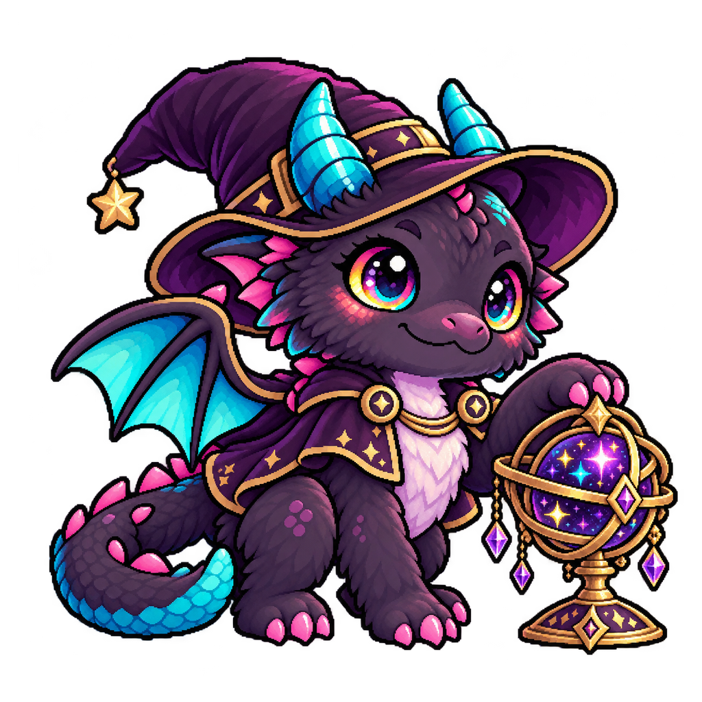
plopp-proud-presentation-1024 assets/dark-v1.1/illustrations/plopp/plopp-proud-presentation-1024.png existing v1.1 runtime resource; optional, no new individual approvalDateiplopp-proud-presentation-512 assets/dark-v1.1/illustrations/plopp/plopp-proud-presentation-512.webp existing v1.1 runtime resource; optional, no new individual approvalDateiplopp-proud-presentation-768 assets/dark-v1.1/illustrations/plopp/plopp-proud-presentation-768.webp existing v1.1 runtime resource; optional, no new individual approvalDateiplopp-signature-1024 assets/dark-v1.1/illustrations/plopp/plopp-signature-1024.png existing v1.1 runtime resource; optional, no new individual approvalDateiplopp-signature-512 assets/dark-v1.1/illustrations/plopp/plopp-signature-512.webp existing v1.1 runtime resource; optional, no new individual approvalDateiplopp-signature-768 assets/dark-v1.1/illustrations/plopp/plopp-signature-768.webp existing v1.1 runtime resource; optional, no new individual approvalDateiplopp-sleeping-under-hat-1024 assets/dark-v1.1/illustrations/plopp/plopp-sleeping-under-hat-1024.png existing v1.1 runtime resource; optional, no new individual approvalDateiplopp-sleeping-under-hat-512 assets/dark-v1.1/illustrations/plopp/plopp-sleeping-under-hat-512.webp existing v1.1 runtime resource; optional, no new individual approvalDateiplopp-sleeping-under-hat-768 assets/dark-v1.1/illustrations/plopp/plopp-sleeping-under-hat-768.webp existing v1.1 runtime resource; optional, no new individual approvalDateiplopp-sleepy-1024 assets/dark-v1.1/illustrations/plopp/plopp-sleepy-1024.png existing v1.1 runtime resource; optional, no new individual approvalDateiplopp-sleepy-512 assets/dark-v1.1/illustrations/plopp/plopp-sleepy-512.webp existing v1.1 runtime resource; optional, no new individual approvalDateiplopp-sleepy-768 assets/dark-v1.1/illustrations/plopp/plopp-sleepy-768.webp existing v1.1 runtime resource; optional, no new individual approvalDateiplopp-thinking-1024 assets/dark-v1.1/illustrations/plopp/plopp-thinking-1024.png existing v1.1 runtime resource; optional, no new individual approvalDateiplopp-thinking-512 assets/dark-v1.1/illustrations/plopp/plopp-thinking-512.webp existing v1.1 runtime resource; optional, no new individual approvalDateiplopp-thinking-768 assets/dark-v1.1/illustrations/plopp/plopp-thinking-768.webp existing v1.1 runtime resource; optional, no new individual approvalDateiplopp-wand-experiment-1024 assets/dark-v1.1/illustrations/plopp/plopp-wand-experiment-1024.png existing v1.1 runtime resource; optional, no new individual approvalDateiplopp-wand-experiment-512 assets/dark-v1.1/illustrations/plopp/plopp-wand-experiment-512.webp existing v1.1 runtime resource; optional, no new individual approvalDateiplopp-wand-experiment-768 assets/dark-v1.1/illustrations/plopp/plopp-wand-experiment-768.webp existing v1.1 runtime resource; optional, no new individual approvalDateiplopp-working-1024 assets/dark-v1.1/illustrations/plopp/plopp-working-1024.png existing v1.1 runtime resource; optional, no new individual approvalDateiplopp-working-512 assets/dark-v1.1/illustrations/plopp/plopp-working-512.webp existing v1.1 runtime resource; optional, no new individual approvalDatei
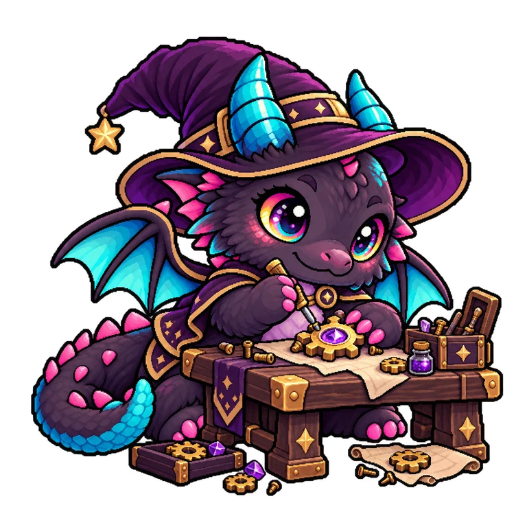
plopp-working-768 assets/dark-v1.1/illustrations/plopp/plopp-working-768.webp existing v1.1 runtime resource; optional, no new individual approvalDateicard-corners assets/dark-v1.1/ornaments/card-corners.svg existing v1.1 runtime resource; optional, no new individual approvalDateicode-flourish assets/dark-v1.1/ornaments/code-flourish.svg existing v1.1 runtime resource; optional, no new individual approvalDateicode-star-divider assets/dark-v1.1/ornaments/code-star-divider.svg existing v1.1 runtime resource; optional, no new individual approvalDateicorner-stars assets/dark-v1.1/ornaments/corner-stars.svg existing v1.1 runtime resource; optional, no new individual approvalDateicorner-vines assets/dark-v1.1/ornaments/corner-vines.svg existing v1.1 runtime resource; optional, no new individual approvalDateidivider-book assets/dark-v1.1/ornaments/divider-book.svg existing v1.1 runtime resource; optional, no new individual approvalDateidivider-dots assets/dark-v1.1/ornaments/divider-dots.svg existing v1.1 runtime resource; optional, no new individual approvalDateidivider-scroll assets/dark-v1.1/ornaments/divider-scroll.svg existing v1.1 runtime resource; optional, no new individual approvalDateifooter-books assets/dark-v1.1/ornaments/footer-books.svg existing v1.1 runtime resource; optional, no new individual approvalDateiframe-arcane assets/dark-v1.1/ornaments/frame-arcane.svg existing v1.1 runtime resource; optional, no new individual approvalDateiheader-stars assets/dark-v1.1/ornaments/header-stars.svg existing v1.1 runtime resource; optional, no new individual approvalDateisparkle-single assets/dark-v1.1/ornaments/sparkle-single.svg existing v1.1 runtime resource; optional, no new individual approvalDateidark_magical-arcane-frame-128 assets/library-extension/motifs/dark_magical-arcane-frame-128.png existing production output; confirmed branding integration, individual extra artwork acceptance not assertedDatei
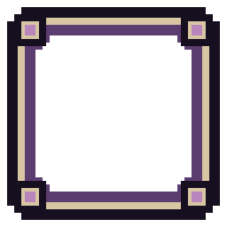
dark_magical-arcane-frame-256 assets/library-extension/motifs/dark_magical-arcane-frame-256.png existing production output; confirmed branding integration, individual extra artwork acceptance not assertedDateidark_magical-arcane-frame-512 assets/library-extension/motifs/dark_magical-arcane-frame-512.png existing production output; confirmed branding integration, individual extra artwork acceptance not assertedDateidark_magical-arcane-frame-9slice-640x360 assets/library-extension/motifs/dark_magical-arcane-frame-9slice-640x360.png existing production output; confirmed branding integration, individual extra artwork acceptance not assertedDatei
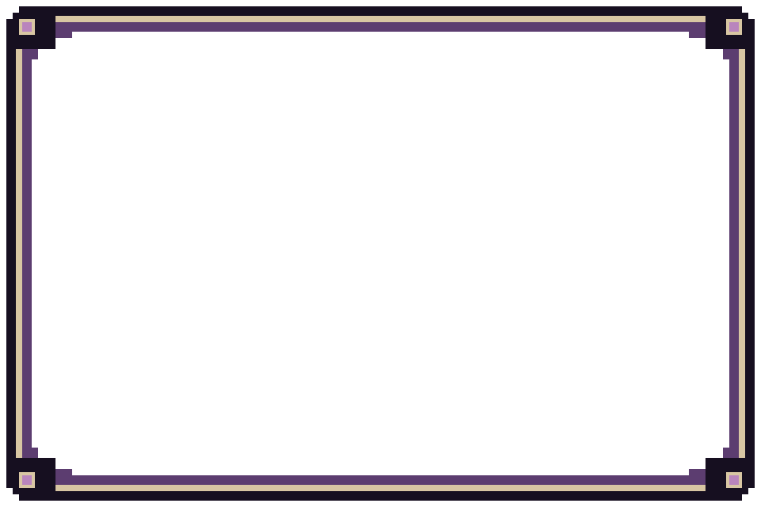
dark_magical-arcane-frame-9slice-960x640 assets/library-extension/motifs/dark_magical-arcane-frame-9slice-960x640.png existing production output; confirmed branding integration, individual extra artwork acceptance not assertedDateidark_magical-arcane-frame assets/library-extension/motifs/dark_magical-arcane-frame.png existing production output; confirmed branding integration, individual extra artwork acceptance not assertedDateidark_magical-arcane-frame assets/library-extension/motifs/dark_magical-arcane-frame.svg existing production output; confirmed branding integration, individual extra artwork acceptance not assertedDateidark_magical-arcane-frame assets/library-extension/motifs/dark_magical-arcane-frame.webp existing production output; confirmed branding integration, individual extra artwork acceptance not assertedDateidark_magical-book-stack-128 assets/library-extension/motifs/dark_magical-book-stack-128.png existing production output; confirmed branding integration, individual extra artwork acceptance not assertedDateidark_magical-book-stack-256 assets/library-extension/motifs/dark_magical-book-stack-256.png existing production output; confirmed branding integration, individual extra artwork acceptance not assertedDateidark_magical-book-stack-512 assets/library-extension/motifs/dark_magical-book-stack-512.png existing production output; confirmed branding integration, individual extra artwork acceptance not assertedDateidark_magical-book-stack assets/library-extension/motifs/dark_magical-book-stack.png existing production output; confirmed branding integration, individual extra artwork acceptance not assertedDateidark_magical-book-stack assets/library-extension/motifs/dark_magical-book-stack.svg existing production output; confirmed branding integration, individual extra artwork acceptance not assertedDateidark_magical-book-stack assets/library-extension/motifs/dark_magical-book-stack.webp existing production output; confirmed branding integration, individual extra artwork acceptance not assertedDateidark_magical-candles-128 assets/library-extension/motifs/dark_magical-candles-128.png existing production output; confirmed branding integration, individual extra artwork acceptance not assertedDateidark_magical-candles-256 assets/library-extension/motifs/dark_magical-candles-256.png existing production output; confirmed branding integration, individual extra artwork acceptance not assertedDateidark_magical-candles-512 assets/library-extension/motifs/dark_magical-candles-512.png existing production output; confirmed branding integration, individual extra artwork acceptance not assertedDateidark_magical-candles assets/library-extension/motifs/dark_magical-candles.png existing production output; confirmed branding integration, individual extra artwork acceptance not assertedDateidark_magical-candles assets/library-extension/motifs/dark_magical-candles.svg existing production output; confirmed branding integration, individual extra artwork acceptance not assertedDateidark_magical-candles assets/library-extension/motifs/dark_magical-candles.webp existing production output; confirmed branding integration, individual extra artwork acceptance not assertedDateidark_magical-code-scroll-128 assets/library-extension/motifs/dark_magical-code-scroll-128.png existing production output; confirmed branding integration, individual extra artwork acceptance not assertedDateidark_magical-code-scroll-256 assets/library-extension/motifs/dark_magical-code-scroll-256.png existing production output; confirmed branding integration, individual extra artwork acceptance not assertedDateidark_magical-code-scroll-512 assets/library-extension/motifs/dark_magical-code-scroll-512.png existing production output; confirmed branding integration, individual extra artwork acceptance not assertedDateidark_magical-code-scroll assets/library-extension/motifs/dark_magical-code-scroll.png existing production output; confirmed branding integration, individual extra artwork acceptance not assertedDateidark_magical-code-scroll assets/library-extension/motifs/dark_magical-code-scroll.svg existing production output; confirmed branding integration, individual extra artwork acceptance not assertedDateidark_magical-code-scroll assets/library-extension/motifs/dark_magical-code-scroll.webp existing production output; confirmed branding integration, individual extra artwork acceptance not assertedDateidark_magical-constellation-tile-128 assets/library-extension/motifs/dark_magical-constellation-tile-128.png existing production output; confirmed branding integration, individual extra artwork acceptance not assertedDatei
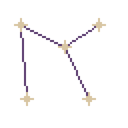
dark_magical-constellation-tile-256 assets/library-extension/motifs/dark_magical-constellation-tile-256.png existing production output; confirmed branding integration, individual extra artwork acceptance not assertedDateidark_magical-constellation-tile-512 assets/library-extension/motifs/dark_magical-constellation-tile-512.png existing production output; confirmed branding integration, individual extra artwork acceptance not assertedDateidark_magical-constellation-tile assets/library-extension/motifs/dark_magical-constellation-tile.png existing production output; confirmed branding integration, individual extra artwork acceptance not assertedDateidark_magical-constellation-tile assets/library-extension/motifs/dark_magical-constellation-tile.svg existing production output; confirmed branding integration, individual extra artwork acceptance not assertedDateidark_magical-constellation-tile assets/library-extension/motifs/dark_magical-constellation-tile.webp existing production output; confirmed branding integration, individual extra artwork acceptance not assertedDateidark_magical-crystals-128 assets/library-extension/motifs/dark_magical-crystals-128.png existing production output; confirmed branding integration, individual extra artwork acceptance not assertedDateidark_magical-crystals-256 assets/library-extension/motifs/dark_magical-crystals-256.png existing production output; confirmed branding integration, individual extra artwork acceptance not assertedDateidark_magical-crystals-512 assets/library-extension/motifs/dark_magical-crystals-512.png existing production output; confirmed branding integration, individual extra artwork acceptance not assertedDateidark_magical-crystals assets/library-extension/motifs/dark_magical-crystals.png existing production output; confirmed branding integration, individual extra artwork acceptance not assertedDateidark_magical-crystals assets/library-extension/motifs/dark_magical-crystals.svg existing production output; confirmed branding integration, individual extra artwork acceptance not assertedDateidark_magical-crystals assets/library-extension/motifs/dark_magical-crystals.webp existing production output; confirmed branding integration, individual extra artwork acceptance not assertedDateidark_magical-idea-bottle-128 assets/library-extension/motifs/dark_magical-idea-bottle-128.png existing production output; confirmed branding integration, individual extra artwork acceptance not assertedDateidark_magical-idea-bottle-256 assets/library-extension/motifs/dark_magical-idea-bottle-256.png existing production output; confirmed branding integration, individual extra artwork acceptance not assertedDateidark_magical-idea-bottle-512 assets/library-extension/motifs/dark_magical-idea-bottle-512.png existing production output; confirmed branding integration, individual extra artwork acceptance not assertedDateidark_magical-idea-bottle assets/library-extension/motifs/dark_magical-idea-bottle.png existing production output; confirmed branding integration, individual extra artwork acceptance not assertedDateidark_magical-idea-bottle assets/library-extension/motifs/dark_magical-idea-bottle.svg existing production output; confirmed branding integration, individual extra artwork acceptance not assertedDateidark_magical-idea-bottle assets/library-extension/motifs/dark_magical-idea-bottle.webp existing production output; confirmed branding integration, individual extra artwork acceptance not assertedDateidark_magical-moon-window-128 assets/library-extension/motifs/dark_magical-moon-window-128.png existing production output; confirmed branding integration, individual extra artwork acceptance not assertedDateidark_magical-moon-window-256 assets/library-extension/motifs/dark_magical-moon-window-256.png existing production output; confirmed branding integration, individual extra artwork acceptance not assertedDateidark_magical-moon-window-512 assets/library-extension/motifs/dark_magical-moon-window-512.png existing production output; confirmed branding integration, individual extra artwork acceptance not assertedDateidark_magical-moon-window assets/library-extension/motifs/dark_magical-moon-window.png existing production output; confirmed branding integration, individual extra artwork acceptance not assertedDateidark_magical-moon-window assets/library-extension/motifs/dark_magical-moon-window.svg existing production output; confirmed branding integration, individual extra artwork acceptance not assertedDateidark_magical-moon-window assets/library-extension/motifs/dark_magical-moon-window.webp existing production output; confirmed branding integration, individual extra artwork acceptance not assertedDateidark-magical-crew-night-build-1024 assets/library-extension/scenes/dark-magical-crew-night-build-1024.png existing production output; confirmed branding integration, individual extra artwork acceptance not assertedDateidark-magical-crew-night-build-512 assets/library-extension/scenes/dark-magical-crew-night-build-512.png existing production output; confirmed branding integration, individual extra artwork acceptance not assertedDateidark-magical-crew-night-build assets/library-extension/scenes/dark-magical-crew-night-build.png existing production output; confirmed branding integration, individual extra artwork acceptance not assertedDateidark-magical-crew-night-build assets/library-extension/scenes/dark-magical-crew-night-build.webp existing production output; confirmed branding integration, individual extra artwork acceptance not assertedDateiprofile-header-dark_magical assets/library-extension/templates/profile-header-dark_magical.png existing production output; confirmed branding integration, individual extra artwork acceptance not assertedDatei
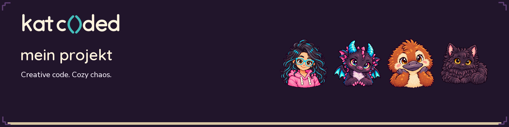
profile-header-dark_magical assets/library-extension/templates/profile-header-dark_magical.webp existing production output; confirmed branding integration, individual extra artwork acceptance not assertedDatei
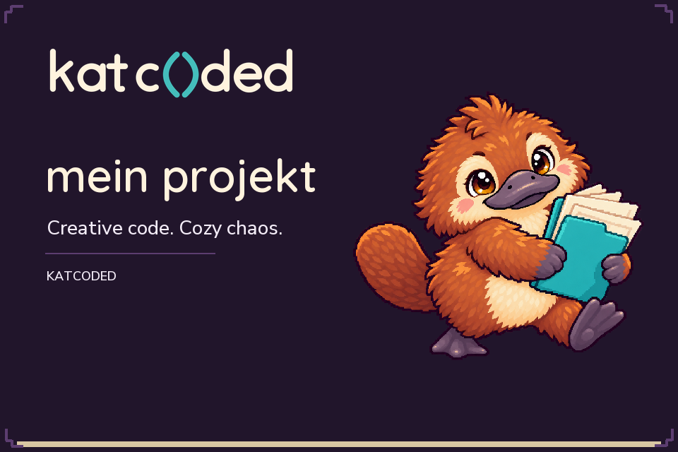
project-card-dark_magical assets/library-extension/templates/project-card-dark_magical.png existing production output; confirmed branding integration, individual extra artwork acceptance not assertedDateiproject-card-dark_magical assets/library-extension/templates/project-card-dark_magical.webp existing production output; confirmed branding integration, individual extra artwork acceptance not assertedDatei
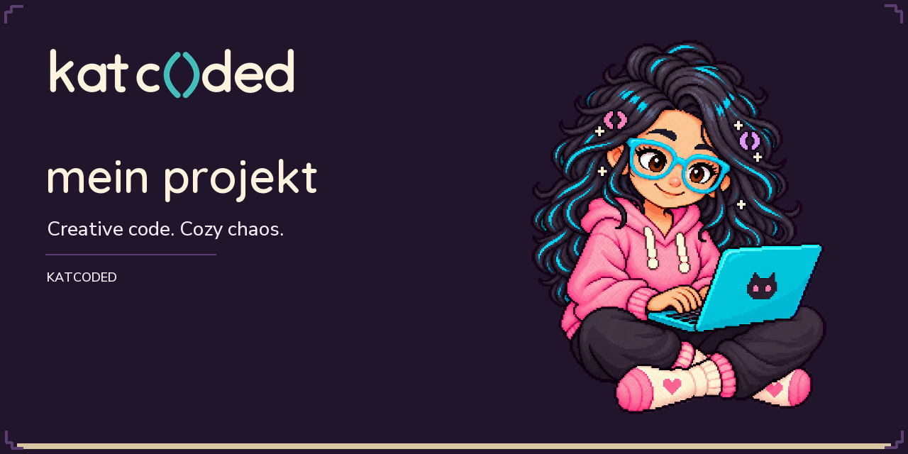
project-cover-dark_magical assets/library-extension/templates/project-cover-dark_magical.png existing production output; confirmed branding integration, individual extra artwork acceptance not assertedDateiproject-cover-dark_magical assets/library-extension/templates/project-cover-dark_magical.webp existing production output; confirmed branding integration, individual extra artwork acceptance not assertedDateireadme-header-dark_magical assets/library-extension/templates/readme-header-dark_magical.png existing production output; confirmed branding integration, individual extra artwork acceptance not assertedDateireadme-header-dark_magical assets/library-extension/templates/readme-header-dark_magical.webp existing production output; confirmed branding integration, individual extra artwork acceptance not assertedDateirepo-social-dark_magical assets/library-extension/templates/repo-social-dark_magical.png existing production output; confirmed branding integration, individual extra artwork acceptance not assertedDatei
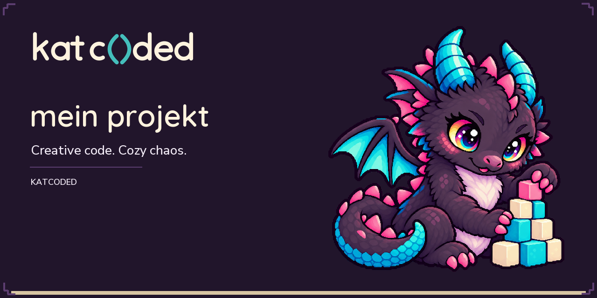
repo-social-dark_magical assets/library-extension/templates/repo-social-dark_magical.webp existing production output; confirmed branding integration, individual extra artwork acceptance not assertedDateibook-code-pattern-decorative backgrounds/book-code-pattern-decorative.svg existing v1.1 background, optionalDateibook-code-pattern-standard backgrounds/book-code-pattern-standard.svg existing v1.1 background, optionalDatei
warm-edge-light-subtle backgrounds/warm-edge-light-subtle.svg existing v1.1 background, optionalDateiwordmark brand/wordmark.svg approved UI v0.1 geometry + approved Cozy focus/disabled; carried by v0.4Dateiapp-floof-dark-1024 branding/app-floof-dark-1024.png logo basis approved in library; branding integration confirmed by current user; no independent favicon approval inferredDateiapp-floof-dark-128 branding/app-floof-dark-128.png logo basis approved in library; branding integration confirmed by current user; no independent favicon approval inferredDateiapp-floof-dark-192 branding/app-floof-dark-192.png logo basis approved in library; branding integration confirmed by current user; no independent favicon approval inferredDateiapp-floof-dark branding/app-floof-dark.png logo basis approved in library; branding integration confirmed by current user; no independent favicon approval inferredDateiapp-floof-dark branding/app-floof-dark.svg logo basis approved in library; branding integration confirmed by current user; no independent favicon approval inferredDateiapp-floof-dark branding/app-floof-dark.webp logo basis approved in library; branding integration confirmed by current user; no independent favicon approval inferredDateiapp-floof-light-1024 branding/app-floof-light-1024.png logo basis approved in library; branding integration confirmed by current user; no independent favicon approval inferredDateiapp-floof-light-128 branding/app-floof-light-128.png logo basis approved in library; branding integration confirmed by current user; no independent favicon approval inferredDateiapp-floof-light-192 branding/app-floof-light-192.png logo basis approved in library; branding integration confirmed by current user; no independent favicon approval inferredDateiapp-floof-light branding/app-floof-light.png logo basis approved in library; branding integration confirmed by current user; no independent favicon approval inferredDateiapp-floof-light branding/app-floof-light.svg logo basis approved in library; branding integration confirmed by current user; no independent favicon approval inferredDateiapp-floof-light branding/app-floof-light.webp logo basis approved in library; branding integration confirmed by current user; no independent favicon approval inferredDateiapp-nibbs-dark-1024 branding/app-nibbs-dark-1024.png logo basis approved in library; branding integration confirmed by current user; no independent favicon approval inferredDateiapp-nibbs-dark-128 branding/app-nibbs-dark-128.png logo basis approved in library; branding integration confirmed by current user; no independent favicon approval inferredDateiapp-nibbs-dark-192 branding/app-nibbs-dark-192.png logo basis approved in library; branding integration confirmed by current user; no independent favicon approval inferredDateiapp-nibbs-dark branding/app-nibbs-dark.png logo basis approved in library; branding integration confirmed by current user; no independent favicon approval inferredDateiapp-nibbs-dark branding/app-nibbs-dark.svg logo basis approved in library; branding integration confirmed by current user; no independent favicon approval inferredDateiapp-nibbs-dark branding/app-nibbs-dark.webp logo basis approved in library; branding integration confirmed by current user; no independent favicon approval inferredDateiapp-nibbs-light-1024 branding/app-nibbs-light-1024.png logo basis approved in library; branding integration confirmed by current user; no independent favicon approval inferredDateiapp-nibbs-light-128 branding/app-nibbs-light-128.png logo basis approved in library; branding integration confirmed by current user; no independent favicon approval inferredDateiapp-nibbs-light-192 branding/app-nibbs-light-192.png logo basis approved in library; branding integration confirmed by current user; no independent favicon approval inferredDateiapp-nibbs-light branding/app-nibbs-light.png logo basis approved in library; branding integration confirmed by current user; no independent favicon approval inferredDateiapp-nibbs-light branding/app-nibbs-light.svg logo basis approved in library; branding integration confirmed by current user; no independent favicon approval inferredDateiapp-nibbs-light branding/app-nibbs-light.webp logo basis approved in library; branding integration confirmed by current user; no independent favicon approval inferredDateiapp-plopp-dark-1024 branding/app-plopp-dark-1024.png logo basis approved in library; branding integration confirmed by current user; no independent favicon approval inferredDateiapp-plopp-dark-128 branding/app-plopp-dark-128.png logo basis approved in library; branding integration confirmed by current user; no independent favicon approval inferredDateiapp-plopp-dark-192 branding/app-plopp-dark-192.png logo basis approved in library; branding integration confirmed by current user; no independent favicon approval inferredDateiapp-plopp-dark branding/app-plopp-dark.png logo basis approved in library; branding integration confirmed by current user; no independent favicon approval inferredDateiapp-plopp-dark branding/app-plopp-dark.svg logo basis approved in library; branding integration confirmed by current user; no independent favicon approval inferredDateiapp-plopp-dark branding/app-plopp-dark.webp logo basis approved in library; branding integration confirmed by current user; no independent favicon approval inferredDateiapp-plopp-light-1024 branding/app-plopp-light-1024.png logo basis approved in library; branding integration confirmed by current user; no independent favicon approval inferredDateiapp-plopp-light-128 branding/app-plopp-light-128.png logo basis approved in library; branding integration confirmed by current user; no independent favicon approval inferredDateiapp-plopp-light-192 branding/app-plopp-light-192.png logo basis approved in library; branding integration confirmed by current user; no independent favicon approval inferredDateiapp-plopp-light branding/app-plopp-light.png logo basis approved in library; branding integration confirmed by current user; no independent favicon approval inferredDateiapp-plopp-light branding/app-plopp-light.svg logo basis approved in library; branding integration confirmed by current user; no independent favicon approval inferredDateiapp-plopp-light branding/app-plopp-light.webp logo basis approved in library; branding integration confirmed by current user; no independent favicon approval inferredDateicompact-floof-dark branding/compact-floof-dark.png logo basis approved in library; branding integration confirmed by current user; no independent favicon approval inferredDateicompact-floof-dark branding/compact-floof-dark.svg logo basis approved in library; branding integration confirmed by current user; no independent favicon approval inferredDateicompact-floof-dark branding/compact-floof-dark.webp logo basis approved in library; branding integration confirmed by current user; no independent favicon approval inferredDateicompact-floof-light branding/compact-floof-light.png logo basis approved in library; branding integration confirmed by current user; no independent favicon approval inferredDatei
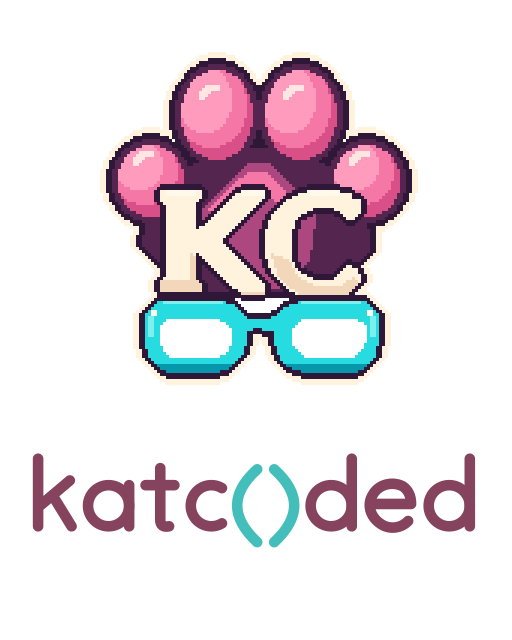
compact-floof-light branding/compact-floof-light.svg logo basis approved in library; branding integration confirmed by current user; no independent favicon approval inferredDateicompact-floof-light branding/compact-floof-light.webp logo basis approved in library; branding integration confirmed by current user; no independent favicon approval inferredDateicompact-nibbs-dark branding/compact-nibbs-dark.png logo basis approved in library; branding integration confirmed by current user; no independent favicon approval inferredDateicompact-nibbs-dark branding/compact-nibbs-dark.svg logo basis approved in library; branding integration confirmed by current user; no independent favicon approval inferredDateicompact-nibbs-dark branding/compact-nibbs-dark.webp logo basis approved in library; branding integration confirmed by current user; no independent favicon approval inferredDatei
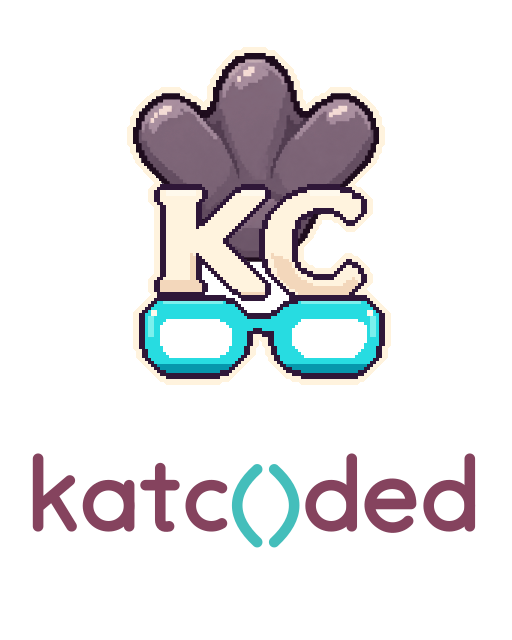
compact-nibbs-light branding/compact-nibbs-light.png logo basis approved in library; branding integration confirmed by current user; no independent favicon approval inferredDateicompact-nibbs-light branding/compact-nibbs-light.svg logo basis approved in library; branding integration confirmed by current user; no independent favicon approval inferredDateicompact-nibbs-light branding/compact-nibbs-light.webp logo basis approved in library; branding integration confirmed by current user; no independent favicon approval inferredDateicompact-plopp-dark branding/compact-plopp-dark.png logo basis approved in library; branding integration confirmed by current user; no independent favicon approval inferredDateicompact-plopp-dark branding/compact-plopp-dark.svg logo basis approved in library; branding integration confirmed by current user; no independent favicon approval inferredDateicompact-plopp-dark branding/compact-plopp-dark.webp logo basis approved in library; branding integration confirmed by current user; no independent favicon approval inferredDateicompact-plopp-light branding/compact-plopp-light.png logo basis approved in library; branding integration confirmed by current user; no independent favicon approval inferredDatei
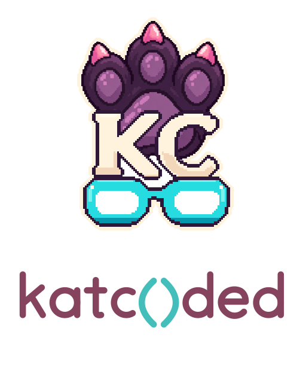
compact-plopp-light branding/compact-plopp-light.svg logo basis approved in library; branding integration confirmed by current user; no independent favicon approval inferredDatei
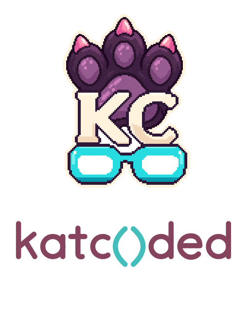
compact-plopp-light branding/compact-plopp-light.webp logo basis approved in library; branding integration confirmed by current user; no independent favicon approval inferredDateihorizontal-floof-dark branding/horizontal-floof-dark.png logo basis approved in library; branding integration confirmed by current user; no independent favicon approval inferredDateihorizontal-floof-dark branding/horizontal-floof-dark.svg logo basis approved in library; branding integration confirmed by current user; no independent favicon approval inferredDateihorizontal-floof-dark branding/horizontal-floof-dark.webp logo basis approved in library; branding integration confirmed by current user; no independent favicon approval inferredDateihorizontal-floof-light branding/horizontal-floof-light.png logo basis approved in library; branding integration confirmed by current user; no independent favicon approval inferredDateihorizontal-floof-light branding/horizontal-floof-light.svg logo basis approved in library; branding integration confirmed by current user; no independent favicon approval inferredDateihorizontal-floof-light branding/horizontal-floof-light.webp logo basis approved in library; branding integration confirmed by current user; no independent favicon approval inferredDateihorizontal-nibbs-dark branding/horizontal-nibbs-dark.png logo basis approved in library; branding integration confirmed by current user; no independent favicon approval inferredDateihorizontal-nibbs-dark branding/horizontal-nibbs-dark.svg logo basis approved in library; branding integration confirmed by current user; no independent favicon approval inferredDateihorizontal-nibbs-dark branding/horizontal-nibbs-dark.webp logo basis approved in library; branding integration confirmed by current user; no independent favicon approval inferredDateihorizontal-nibbs-light branding/horizontal-nibbs-light.png logo basis approved in library; branding integration confirmed by current user; no independent favicon approval inferredDateihorizontal-nibbs-light branding/horizontal-nibbs-light.svg logo basis approved in library; branding integration confirmed by current user; no independent favicon approval inferredDateihorizontal-nibbs-light branding/horizontal-nibbs-light.webp logo basis approved in library; branding integration confirmed by current user; no independent favicon approval inferredDateihorizontal-plopp-dark branding/horizontal-plopp-dark.png logo basis approved in library; branding integration confirmed by current user; no independent favicon approval inferredDateihorizontal-plopp-dark branding/horizontal-plopp-dark.svg logo basis approved in library; branding integration confirmed by current user; no independent favicon approval inferredDateihorizontal-plopp-dark branding/horizontal-plopp-dark.webp logo basis approved in library; branding integration confirmed by current user; no independent favicon approval inferredDateihorizontal-plopp-light branding/horizontal-plopp-light.png logo basis approved in library; branding integration confirmed by current user; no independent favicon approval inferredDateihorizontal-plopp-light branding/horizontal-plopp-light.svg logo basis approved in library; branding integration confirmed by current user; no independent favicon approval inferredDateihorizontal-plopp-light branding/horizontal-plopp-light.webp logo basis approved in library; branding integration confirmed by current user; no independent favicon approval inferredDateikc-glasses branding/kc-glasses.png logo basis approved in library; branding integration confirmed by current user; no independent favicon approval inferredDateikc-glasses branding/kc-glasses.svg logo basis approved in library; branding integration confirmed by current user; no independent favicon approval inferredDateikc-glasses branding/kc-glasses.webp logo basis approved in library; branding integration confirmed by current user; no independent favicon approval inferredDateikc-glasses@4x branding/kc-glasses@4x.png logo basis approved in library; branding integration confirmed by current user; no independent favicon approval inferredDateikc-glasses@8x branding/kc-glasses@8x.png logo basis approved in library; branding integration confirmed by current user; no independent favicon approval inferredDateikc-monochrome-dark branding/kc-monochrome-dark.png logo basis approved in library; branding integration confirmed by current user; no independent favicon approval inferredDateikc-monochrome-dark branding/kc-monochrome-dark.svg logo basis approved in library; branding integration confirmed by current user; no independent favicon approval inferredDateikc-monochrome-dark branding/kc-monochrome-dark.webp logo basis approved in library; branding integration confirmed by current user; no independent favicon approval inferredDateikc-monochrome-dark@4x branding/kc-monochrome-dark@4x.png logo basis approved in library; branding integration confirmed by current user; no independent favicon approval inferredDateikc-monochrome-dark@8x branding/kc-monochrome-dark@8x.png logo basis approved in library; branding integration confirmed by current user; no independent favicon approval inferredDateikc-monochrome-light branding/kc-monochrome-light.png logo basis approved in library; branding integration confirmed by current user; no independent favicon approval inferredDateikc-monochrome-light branding/kc-monochrome-light.svg logo basis approved in library; branding integration confirmed by current user; no independent favicon approval inferredDateikc-monochrome-light branding/kc-monochrome-light.webp logo basis approved in library; branding integration confirmed by current user; no independent favicon approval inferredDateikc-monochrome-light@4x branding/kc-monochrome-light@4x.png logo basis approved in library; branding integration confirmed by current user; no independent favicon approval inferredDateikc-monochrome-light@8x branding/kc-monochrome-light@8x.png logo basis approved in library; branding integration confirmed by current user; no independent favicon approval inferredDateikc-monogram branding/kc-monogram.png logo basis approved in library; branding integration confirmed by current user; no independent favicon approval inferredDateikc-monogram branding/kc-monogram.svg logo basis approved in library; branding integration confirmed by current user; no independent favicon approval inferredDateikc-monogram branding/kc-monogram.webp logo basis approved in library; branding integration confirmed by current user; no independent favicon approval inferredDateikc-monogram@4x branding/kc-monogram@4x.png logo basis approved in library; branding integration confirmed by current user; no independent favicon approval inferredDateikc-monogram@8x branding/kc-monogram@8x.png logo basis approved in library; branding integration confirmed by current user; no independent favicon approval inferredDateilogo-128 branding/logos/floof/logo-128.png logo basis approved in library; branding integration confirmed by current user; no independent favicon approval inferredDateilogo-1536 branding/logos/floof/logo-1536.png logo basis approved in library; branding integration confirmed by current user; no independent favicon approval inferredDateilogo-1536 branding/logos/floof/logo-1536.webp logo basis approved in library; branding integration confirmed by current user; no independent favicon approval inferredDateilogo-512 branding/logos/floof/logo-512.png logo basis approved in library; branding integration confirmed by current user; no independent favicon approval inferredDateimaster branding/logos/floof/master.svg logo basis approved in library; branding integration confirmed by current user; no independent favicon approval inferredDateilogo-128 branding/logos/nibbs/logo-128.png logo basis approved in library; branding integration confirmed by current user; no independent favicon approval inferredDateilogo-1536 branding/logos/nibbs/logo-1536.png logo basis approved in library; branding integration confirmed by current user; no independent favicon approval inferredDateilogo-1536 branding/logos/nibbs/logo-1536.webp logo basis approved in library; branding integration confirmed by current user; no independent favicon approval inferredDateilogo-512 branding/logos/nibbs/logo-512.png logo basis approved in library; branding integration confirmed by current user; no independent favicon approval inferredDateimaster branding/logos/nibbs/master.svg logo basis approved in library; branding integration confirmed by current user; no independent favicon approval inferredDateilogo-128 branding/logos/plopp/logo-128.png logo basis approved in library; branding integration confirmed by current user; no independent favicon approval inferredDateilogo-1536 branding/logos/plopp/logo-1536.png logo basis approved in library; branding integration confirmed by current user; no independent favicon approval inferredDateilogo-1536 branding/logos/plopp/logo-1536.webp logo basis approved in library; branding integration confirmed by current user; no independent favicon approval inferredDateilogo-512 branding/logos/plopp/logo-512.png logo basis approved in library; branding integration confirmed by current user; no independent favicon approval inferredDateimaster branding/logos/plopp/master.svg logo basis approved in library; branding integration confirmed by current user; no independent favicon approval inferredDateiwordmark-dark branding/wordmark-dark.png logo basis approved in library; branding integration confirmed by current user; no independent favicon approval inferredDateiwordmark-dark branding/wordmark-dark.svg logo basis approved in library; branding integration confirmed by current user; no independent favicon approval inferredDateiwordmark-dark branding/wordmark-dark.webp logo basis approved in library; branding integration confirmed by current user; no independent favicon approval inferredDateiwordmark-light branding/wordmark-light.png logo basis approved in library; branding integration confirmed by current user; no independent favicon approval inferredDateiwordmark-light branding/wordmark-light.svg logo basis approved in library; branding integration confirmed by current user; no independent favicon approval inferredDateiwordmark-light branding/wordmark-light.webp logo basis approved in library; branding integration confirmed by current user; no independent favicon approval inferredDateiaccent decorations/accent.svg approved UI v0.1 geometry + approved Cozy focus/disabled; carried by v0.4Dateidivider decorations/divider.svg approved UI v0.1 geometry + approved Cozy focus/disabled; carried by v0.4Datei